We implemented naturally recursive Lindenmayer systems (commonly known as fractals) on an Intel Altera board to graph on a VGA screen. Our system proved to be faster than pure software programs written in both Python and C.
Introduction
There are dozens of L-Systems in existence, and for this project we implemented seven. Each was configurable via the number of iterations the system performed, the axiom to begin with, the size and color of the lines, and the starting coordinates of the system.
- Dragon curve
- Two versions of the Sierpinski arrowhead
- Two versions of the Koch curve
- Cross
- Tessellated triangles
This project was composed of two subsystems: Verilog code for the FPGA to calculate the L-Systems and graph the result, and the C code for the HPS to interface with the user. The FPGA has a faster system clock frequency and, considering the generation of L-Systems is computationally intensive, it made sense to offload that onto the faster, hardware-based part of the Altera board. Graphing on the VGA screen isn’t something that’s limited to the FPGA itself, but bandwidth would’ve been a limiting factor when transmitting large chunks of data from the FPGA to the HPS. With this in mind, graphing was kept to the FPGA, where the results were already being calculated. The HPS was instead utilized for its terminal interface, where the user was able to configure the L-System to be graphed. Any system settings were communicated to the FPGA via PIO ports to use in its computations.
High-Level Design
The formal definition of a Lindenmayer System (or L-System) is “a parallel rewriting system and a type of formal grammar.” In simpler terms, L-Systems generate fractals, which are never-ending complex patterns that are self similar at different scales such that zooming in or out will still show the same fractal pattern.
There are three main components to every L-System: an alphabet, an axiom, and rules. These configure and manipulate the strings of characters that define how the visualization should act, such as moving forward, turning 90 degrees to the right, or branching out from a previous state. The alphabet is the set of valid symbols that can be included in these strings; for example, an alphabet of {A, B} restricts any valid sentence to only contain A and B. The axiom sets the initial value for the system’s string; working within the system with alphabet {A, B}, an axiom could be “A.” Rules change the string recursively, generating new strings repeatedly and providing actions to control the movements of the growing visualization. They’re structured to take in a predecessor and a successor—the former is the input and the latter is the output after having the rule applied to it. A rule to our {A, B} system with axiom A could be “A → AB”; this would take our initial state and create the string “AB” for the next state.
The alphabet for every phase of our design, no matter the coding language, consists of the following symbols, as shown in Table 1. Each symbol corresponds to a specific action, from graphing (which are consistent across L-Systems) to buffer characters for rule generation (specific to each L-System).
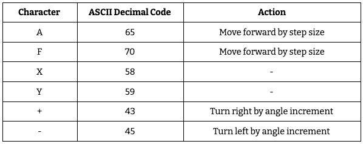Table 1: Examples of actions associated with L-System symbols.
Though there is an infinite number of combinations of axioms and rules within the given alphabet, the seven L-Systems we developed have preset values for each. We followed these so as to ensure the graphed results would match what was expected. Table 2 shows the axioms and rules for each L-System.
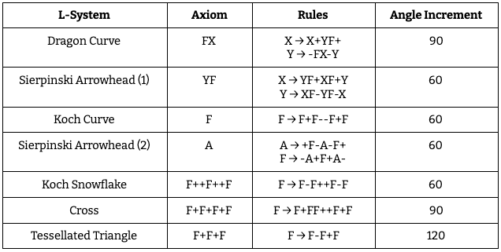Table 2: Parameters for the L-Systems in our implementation.
Baseline Design
Considering L-Systems have multiple moving parts, the most straightforward way to understand their inner mechanisms comes from our baseline designs.
Python
This Python code is an off-the-shelf implementation that we extended to incorporate the axioms and rules for
our specific L-Systems. It uses a dictionary of rules—key-value pairs where the key is the character to apply
to rule to and the value is the output string for that character—and locally declared axiom,
iterations,
angle, and step variables to iterate over a starting axiom and graph the resulting
L-System using pygame. This
is accomplished with several functions, each of which helped build the foundations for our C code and
eventually our Verilog design.
applyRule is responsible for taking in a single character and converting it to the output string
as specified
in the rules dictionary. It uses a for loop through every entry in rules to see if
any key matches the input
character. If a rule exists for this specific character, the result string is set to that rule’s value,
otherwise the result string is the original character. This exemplifies how not every character will be
expanded through a rule—at the very least it’ll just be copied into the resulting output string.
def applyRule(input): output = "" for rule, result in rules.items( ): # applying the rule by checking the current char against it if (input == rule): output = result # Rule 1 break else: output = input # else ( no rule set ) output = the current char -> no rule was applied return output
The next function is processString. Rather than take an individual character as input, it
receives an entire
string to process. Every character must be handled in order to see if a rule can apply to it, so a for loop
runs over every character and sends each to applyRule. The new string is built up with each call
to applyRule,
creating a string that will have grown in length from the original.
def processString(oldStr): newstr = "" for character in oldStr: newstr = newstr + applyRule(character) # build the new string return newstr
createSystem puts the previous two functions together to bring iterations into the mix. It takes
in axiom and
numIters as inputs, where the former is the starting string for the L-System and the latter is
the specified
number of iterations to process the string by. While processString does grow the string as it
loops over every
character, createSystem is responsible for repeating this process multiple times from iteration
number zero to
iteration number numIters-1. With each iteration, it takes the string from the previous iteration
and puts it
into processString, storing the result so that the next iteration can use it.
def createSystem(numIters, axiom): startString = axiom endString = "" for i in range(numIters): # iterate with applying the rules print("Iteration: {0}".format(i)) endString = processString(startString) startString = endString return endString
With the L-System string built through createSystem, drawTree is able to graph the
L-System using pygame. It
takes in the L-System string and the starting coordinates from which to graph. It then uses a loop to look at
every character in the string to determine what (if any) graphing functionality it needs to provide. If it
sees an ‘A’ or ‘F’ it draws forward by the length determined by step. If it sees a ‘+’ it
increments the
orientation of the system by angle, and similarly decrements the orientation of the system by
angle if it sees
a ‘-’. ‘X’ and ‘Y’ aren’t graphing characters so they, and any other characters not equal to ‘A’, ‘F’, ‘+’, or
‘-’, are skipped over.
def drawTree(input, oldpos): a = 0 # angle i = 0 # counter for process calculation processOld = 0 # old process newpos = oldpos color = (255, 255, 255) linesize = 1 for character in input: # process for drawing the l-system by writing the string to the screen i += 1 # print process in percent process = i * 100 / len(input) if not process == processOld: # print(process, "%") processOld = process if character == 'A': # magic happens here newpos = polar_to_cart(a + angleoffset, step, *oldpos) pygame.draw.line(screen, color, oldpos, newpos, linesize) oldpos = newpos elif character == 'F': newpos = polar_to_cart(a + angleoffset, step, *oldpos) pygame.draw.line(screen, color, oldpos, newpos, linesize) oldpos = newpos elif character == '+': a += angle elif character == '-': a -= angle
C
Since Python is an interpreted, high-level language, our next step was to synthesize and graph L-Systems in C code to be run on the FPGA. This did require a Quartus project to be compiled and loaded onto the board, but it wasn’t something that we changed at all. Specifically, we used the “GPU with FAST display from SRAM” project from the ECE 5760 Avalon Bus Master page.
The program layout of the Python code corresponds almost entirely with that of the C program, though it only
focuses on the dragon curve, not all seven L-Systems. First there is the applyRule_DragonCurve
function, which
is responsible for receiving a single character and outputting a character pointer to a string. This string is
built by putting the input character through a switch-case statement and seeing which condition it matches.
char* applyRule_DragonCurve(char input) { char tmp[1000000]; switch(input) { case 'X': { strcpy(tmp,"X+YF+"); break; } case 'Y': { strcpy(tmp,"-FX-Y"); break; } default: { strcpy(tmp, (char[2]) { (char) input, '\0' } ); break; } } return tmp; }
processString_DragonCurve follows the same logic as processString in the Python. It
takes in a
character
pointer to a string and then iterates on every character to put it through applyRule_DragonCurve.
The result
string from each call to applyRule_DragonCurve is concatenated together in memory.
char* processString_DragonCurve(char* prev) { int i = 0; char *tmp; char *check; int length = strlen(prev); for (i = 0; i < length; i++) { check = prev; tmp = applyRule_DragonCurve(prev[i]); strcat(prev, tmp); } return prev; }
createSystem_DragonCurve needs the number of iterations and the starting axiom to function. For
every number
in the range [0, numIters-1] it calls processString_DragonCurve on the string from
the previous
iteration.
char* createSystem_DragonCurve(int numIters, char* axiom) { char start[1000000]; strcpy(start, axiom); char end[1000000]; *end = ""; int i = 0; char *check; for (i = 0; i < numIters; i++) { check = processString_DragonCurve(start); *start = end; } return start; }
Finally, the dragon curve is drawn through the aptly named function draw_DragonCurve. It loops
through each
character in the character pointer of the L-System string and checks to see what graphing functionality that
character possesses. This leans on VGA drawing functions written by Bruce Land.
void draw_DragonCurve(char* input, int old_x, int old_y) { int a = 0; // 0 degrees is straight up vertically int length = 10; int new_x = old_x; int new_y = old_y; int i = 0; char *check = input; printf("GRAPHING STRING: "); while(*check!='\0') printf("%c",*check++); printf("\n"); for (i = 0; i < strlen(input); i++) { if(input[i] == 'X') { continue; } else if (input[i] == 'Y') { continue; } else if (input[i] == 'F') { if (a % 360 == 0) { VGA_line(new_x, new_y, new_x, new_y - length, red); new_x = new_x; new_y = new_y - length; } else if (a % 270 == 0) { VGA_line(new_x, new_y, new_x - length, new_y, yellow); new_x = new_x - length; new_y = new_y; } else if (a % 180 == 0) { VGA_line(new_x, new_y, new_x, new_y + length, red); new_x = new_x; new_y = new_y + length; } else if (a % 90 == 0) { VGA_line(new_x, new_y, new_x + length, new_y, yellow); new_x = new_x + length; new_y = new_y; } } else if (input[i] == '+') { a = a + 90; } else if (input[i] == '-') { a = a - 90; } } }
Full-System Design
Structure
Boasting a faster internal clock and configurable hardware, the FPGA is the core computational power for the
system. This power is directed towards two main functionalities: calculating the L-System and graphing the
L-System. The former relies on string manipulation, while the latter uses enable and address signals to write
to the VGA screen. Since this system serves two distinct purposes, it was useful to split each into a separate
Verilog file: rules.v for the calculations and DE1_SoC_Computer.v for the graphing.
This modular approach not
only made it simpler to visualize how each module connects, but it also made the testing process easier to
take step by step.
The C code running on the ARM side establishes the serial input control for the L-System’s settings, such as the L-System in question and the starting coordinates for graphing. There was the opportunity to use this for graphing as well, but the bandwidth and PIO port size limitations would’ve hindered our speedup. There was the additional thought of housing the L-System calculations on the ARM side, but this was also scrapped due to the FPGA’s faster clock frequency and opportunity for large amounts of data to be stored through M10Ks.
Bridging the gap between the ARM and FPGA is the Avalon bus, visualized and configured using QSYS. The ARM
takes in settings from the user and outputs them to the FPGA through output PIO ports, while the FPGA sends
over timing information through an input PIO port. These ports have to be programmed on both ends; the ARM
code memory maps their address spans, and the FPGA instantiates wires to connect the ports of the ARM module
(called Computer_System in the Verilog) to relevant inputs/outputs in Verilog modules.
The interweaving of these two technologies and the emphasis on each system’s strengths led to the development of responsive, visualizable L-Systems. Figure XX below shows how each connects via input and output signals and wires.
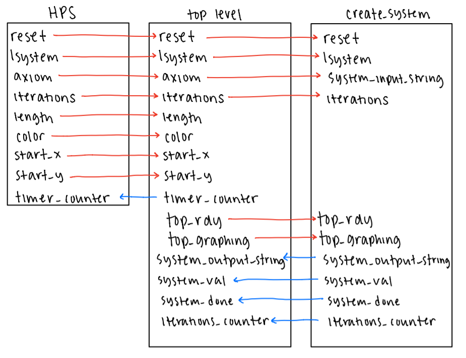Figure 1: Block Diagram of signal flow between modules.
Computation
The bulk of the code used to create these L-Systems is found in rules.v across four modules:
dual_clock_ram,
signed_mult, rules, and create_system.
dual_clock_ram
dual_clock_ram is the memory unit of our system that allows our system to be recursive. Each
instantiation of
the module is composed of eight M10k blocks in a 8-bit by 8K configuration, with each block holding one of the
eight blocks. The module performs one cycle writes and two cycle reads. Thus, in the cycle that a memory
operation is called, a write would finish the following cycle, and a read would finish after the second
positive edge of the clock. However, it is possible for these memops to still take the same amount of time
because the read and write operations are processed on different clocks, both of which are taken as inputs
(clk1, clk2). The other inputs are write enable (we),
read_address, write_address, and write data (d). The
sole output is read data (q). When graphing, this module is the limiting factor for the number of
iterations
which can be performed. With a fixed memory size, at some point, we will run out of space to write a new
iteration. We settled on 8K memory locations because we calibrated our system to fit a 10-11 iteration dragon
curve.
signed_mult
This module performs 11.21 fixed point signed multiplication. This means that there are 11 bits of integer and 21 bits of decimal in the inputs and output. Our reasoning behind 11.21 for the fixed point representation was that there were ample integer bits, so as to avoid overflowing during computation. For the purposes of this project, we felt the ranges of integer and floating point provided good resolution. This module is instantiated in our top level code for use in calculating the necessary vertical distances for diagonal lines.
rules
rules is a clocked module which applies a specific update rule to an input character.
Specifically it takes
in an 8-bit character, and, depending on the specified L-system, will convert the input to an up to ten
character output string. To interpret the character inputs properly, the alphabet of all valid characters for
the available L-systems is defined with local parameters. The module operates by sitting in an initial wait
state until a valid signal is asserted, indicating that the input is valid. The module then transitions to the
appropriate update state depending on the input L-system signal. Within the specified state, only the rules of
that system are available. If there exists a rule for that character, the corresponding conversion will be
written to the result. If not, then the character is written to the result with 72 zeros appended to the end
to fit the ten character buffer size.
Figure 2: Diagram of the Finite State Machine used to apply rules to each character.
This scheme makes it fairly easy to add new L-Systems. We merely have to expand the alphabet and add an extra state to handle this new case. Below are examples of some of the systems we generated. We currently have 7 systems encoded. They are the dragon curve, two versions of the Sierpinski arrowhead, Koch curve, Koch snowflake, cross, and tessellated triangle.
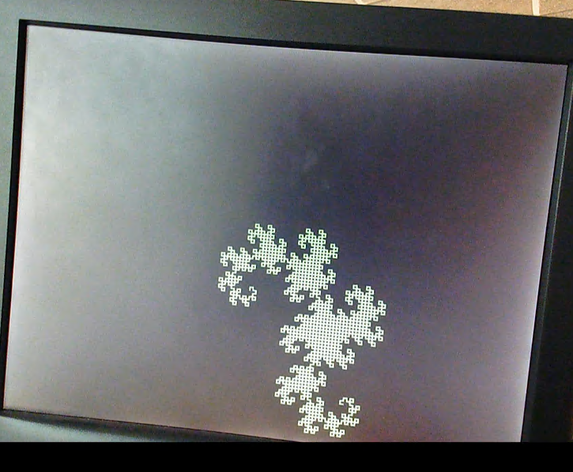Figure 3: The Dragon Curve with 11 iterations (the largest possible in our implementation), with a length of 4, graphed in the center of the screen (300,300).
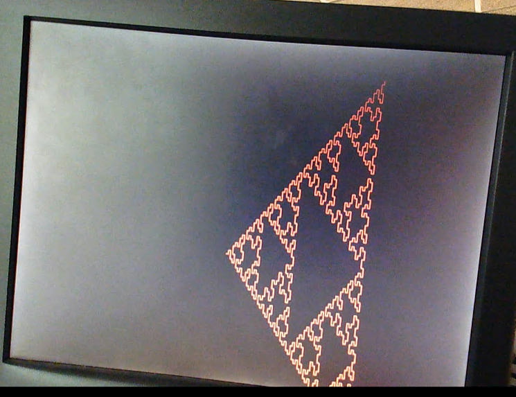
Figure 4: Sierpinski Arrowhead (2), with 6 iterations, a length of 7, graphed in the center of the screen (300,300).
create_system
create_system in particular does the heavy lifting, instantiating two
dual_clock_ram modules and
one rules
module in order to receive a 32-bit axiom, perform the calculations necessary to convert that starting string
into a set of characters representing a fractal of that requested L-System, and output the entire result
string byte by byte to the top level.
create_system requires a plethora of input and output values in order to function. The typical
one bit clk
and reset signals are inputs to the system, dictating when the internal FSM is allowed to restart
and at what
frequency it can run. system_input_string is the starting axiom, limited to 32 bits due to the
maximum width
of the PIO ports sending over this string from the HPS. A three bit signal lsystem chooses which
of the seven
L-Systems to calculate and graph, and four bit value iterations provides the number of recursive
iterations
the L-System will be required to make. As the module hops from state to state,
system_output_string is set to
a byte of the outputted result in order to somewhat parallelize the math being performed with the graphing
being done. iterations_counter is another output, this time four bits; it’s updated to be equal
to the
iteration create_system is on so as to let the top level know when it’s appropriate to graph.
The handshake interface between create_system and the top level FSM for graphing worked with
four signals:
top_rdy, top_graphing, system_val, and system_done. Those
outputted by the top level—top_rdy and
top_graphing—were received as inputs, indicating that the top level was ready for the next byte
to be graphed
and in what stage of graphing the top level was in, respectively. system_val and
system_done are outputs, set
appropriately to show that there’s a new valid output from create_system and that
create_system has completed
its L-System entirely.
Two dual_clock_ram modules are instantiated to hold the L-System as it passes through every
iteration. The
first loop through the L-System string is performed on the axiom, which is a hard-coded value set by the user
through the HPS. The expanded result string, created by running each character through the rules
module, is
then stored in an M10K block connected to one of the dual_clock_ram modules (let’s call it A).
The next
iteration takes this processed result string from A, runs each character through the rules
module, and stores
the new result in an M10K block created by the other dual_clock_ram module (designated as B).
From then on,
every iteration of create_system will read the previous iteration’s result from one
dual_clock_ram and write
the result to the other, alternating between A being read and B being written to B being read and A being
written. Considering that iterations_counter—the register used to keep track of the
iterations—starts at zero,
here’s a simple rule of thumb: every even iteration writes to A and reads from B (except in the case of the
zeroth iteration, which reads from axiom), and every odd iteration writes to B and reads from A. The
dual_clock_ram modules will be referred to as A and B from now on.
Aptly named rule, an instance of the rules module is connected to the appropriate
inputs and internal
registers. It needs the lsystem input to choose the correct L-System rules to apply to each
character of the
L-System string, the character in question (stored in input_char), and a valid signal
rule_val to
indicate the
next character is ready to be processed. It outputs a maximum 80 bit value to rule_result after
applying the
relevant L-System rules to input_char, and a done signal rule_done used to
acknowledge that it’s
done
processing.
The mechanism propelling the creation of the requested L-System is composed of 13 states, as seen in the FSM
below. The state logic and transitions are handled within an always block clocked on the positive triggering
edge of the clk signal.
Figure 5: Diagram of the create_system Finite State Machine.
The reset signal is active high and is sent across the PIO ports from the HPS once the user has
configured
all of the desired characteristics of the L-System. On reset, all of the internal registers (most notably the
read/write addresses and write enables of both A and B, and the system_done signal) are cleared
and
system_input_string is loaded into the axiom register. The defined
RESET_SYSTEM does this as well. The
difference between the actions triggered by the reset signal and the RESET_SYSTEM
state is that
the former
only occurs once at the very beginning of the program, and the latter is what the FSM returns to after
completing an L-System and waiting for the next request from the user.
Both the reset signal condition and RESET_SYSTEM transition to
CLEAR_M10KS (though the latter
waits until
reset is high again, indicating the new L-System characteristics have been sent from the HPS). Since the
L-System strings during and between iterations are stored in M10K blocks, it’s necessary to clear them before
embarking on the next L-System. Until the write address values for A and B have reached the last possible
memory address 0h1FFF (8191 in decimal), both write enable signals are set to one and the data values set to
zero. This will result in every byte of the M10Ks being set to 8’b0. The state stays within itself until this
process is complete, then moves on to GET_CHAR.
GET_CHAR is responsible for grabbing the next character in the string to pass into the
rule
module. However,
it must wait until the top level is ready (equivalent to the top level finishing graphing the previous
character sent over from create_system) so it doesn’t set the value of input_char
for the rules
module until
the top_rdy signal is set to one. When this condition is met, how the state proceeds depends on
what iteration
the system is on, shown in iterations_counter. If the system is on the zeroth iteration, the
hardcoded axiom
is being processed so input_char is the least significant (rightmost) byte of axiom
and the FSM can
immediately transition to COMPUTE_DRAGON. If the system hasn’t reached the inputted value of
iterations, it
proceeds to READ_M10K to read a byte from the string written to either A or B’s M10K memory. If
the system has
performed the required number of iterations, the FSM goes to DONE.
READ_M10K chooses which set of M10Ks to read from based on whether
iterations_counter is even or odd. Based
on the setup of the dual_clock_ram, there’s no read enable signal; instead it takes three cycles
to read the
requested address in the M10K. Originally, we thought this meant our FSM would require some number of buffer
states to ensure three clock cycles passed before the value was ready to be used, but the fact that our FSM is
13 states means that enough time passes between individual characters being processed to absorb those three
clock cycles. We take advantage of this by incrementing the read address for the appropriate
dual_clock_ram
module within READ_M10K based on whether iterations_counter is even or odd. Since
this is the
only state to
change the value of the read addresses, A and B will read at their corresponding incremented address and the
value at that address will be ready to grab the next time the FSM goes to READ_M10K.
Whether from GET_CHAR directly or READ_M10K, the next state of the FSM is
COMPUTE_DRAGON. Don’t
let the name
fool you, as this state is responsible for getting the resulting output from applying any of the seven
L-System rule configurations, not just that of the dragon curve. The rule_val signal is set to
tell rule that
another character is on its way, and rule_result is stored in another register to be shifted in
future states
of the FSM. While the done signal rule_done is equal to zero, the FSM stays in
COMPUTE_DRAGON,
waiting for the
rule module to finish processing the character. When this isn’t the case, it’s time to write the
result to the
M10Ks: A through state WRITE_M10K_A if iterations_counter is even, or B through
state
WRITE_M10K_B if
iterations_counter is odd.
WRITE_M10K_A and WRITE_M10K_B are identical, save for the fact that they’re dealing
with two different
dual_clock_ram modules. As each memory location in the M10Ks is a byte wide, we take the most
significant
(leftmost) byte of rule_result_reg (note that this is not rule_result) and load it
into either A or B’s data
register as well as system_output_string. Every rule applied to the characters can output a
maximum of ten
bytes from a single byte input, so it takes multiple cycles to write the entirety of
rule_result_reg to the
M10Ks. The simplest way to keep track of which bytes had been written back and which ones hadn’t is by
shifting out each byte of rule_result_reg after it’s written to its appropriate location in the
M10Ks. Hence,
we know the entirety of the output from rule is stored in memory once rule_result_reg equals 80
bit zero; in
this case, the write enable is set low so as to not accidentally write to any extra memory locations,
system_val is set low to indicate that there isn’t a character to be graphed by the top level,
and the FSM
transitions to NEXT_BYTE. If there are more bytes in rule_result_reg to write to the
M10Ks, the
write enable
is set high and the top_rdy is checked. top_rdy lets create_system know
when the top
level has
finished
handling the previous character sent to it and is ready for the next. When top_rdy is high,
system_val is set
high in response to say “Hey, we have a new character ready for you!” and the FSM transitions to
INCREMENT_WRITE_A (or INCREMENT_WRITE_B when in WRITE_M10K_B, writing
to the B dual_clock_ram).
Otherwise,
system_val is kept low and the FSM stays within WRITE_M10K_A.
The goal for this val/rdy handshake is to not let one part of the system get ahead of the other. We don’t
want create_system to continue chugging along with processing and storing the result string
before the top
level is done with the previous character. We also don’t want the top level to graph a character that isn’t
ready yet, lest it mess up the final design of the L-System.
Much like WRITE_M10K_A and WRITE_M10K_B, INCREMENT_WRITE_A and
INCREMENT_WRITE_B are the same except for what
dual_clock_ram they’re interfacing with. This state is responsible for incrementing either A or
B’s write
address so that the next time the FSM is in WRITE_M10K_A or WRITE_M10K_B it knows to
write to the next
available location in memory. It’s also responsible for shifting rule_result_reg. Since the
baseline Python
code looped across each string from left to right, so does this Verilog implementation by shifting the
leftmost byte out. The FSM immediately transitions back to WRITE_M10K_A or
WRITE_M10K_B.
After the entirety of rule_result_reg has been stored in the appropriate
dual_clock_ram module,
NEXT_BYTE is
responsible for shifting axiom in a similar fashion to rule_result_reg. As described
earlier,
axiom holds the
32 bit hardcoded axiom for the L-System and is the starting point for the zeroth iteration of
create_system.
Once every character of axiom has gone through the rules module, it can be shifted
out because
there is no use
for it anymore—its result is all the system needs to remember about it, and that’s already been written to the
M10Ks. In any iteration besides the zeroth, this acts more like a buffer state than anything else, but it also
serves to hold the system_val and system_done signals low, which are easy to lose
track of.
The next state is INCREMENT_ITER; as the name implies, it’s responsible for incrementing the
value of
iterations_counter once the entirety of the string has been processed. There are many checks that
must be done
before this simple task can happen, since there are multiple cycles within the FSM and the iterations
themselves are cycles. First, system_output_string must be zero, axiom must be zero,
and
top_graphing must be
two. system_output_string being zero means that the last value of rule_result_reg is
zero and the
entirety of
the string has been processed and shifted out, with system_output_string lagging and grabbing an
extra byte of
rule_result_reg in WRITE_M10K_A/B while waiting to go to NEXT_BYTE.
axiom is zero once the zeroth
iteration
has reached its end, so this check makes sure that the system has at least gotten through that.
top_graphing
is an input from the top level showing what state of graphing the top level is in: 0 before a character is
graphed, 1 during graphing, and 2 post-graphing. A value of 2 means that the last character sent over by
create_system has been fully graphed. The next check depends on iterations_counter:
if it’s zero,
no
additional logic is needed; if it’s even, B needs to be reading a value of zero; and if it’s odd, A needs to
be reading a value of zero. This is a check to see if there are more bytes to be read and processed from the
M10Ks (hence why on the zeroth iteration this doesn’t require any logic) since all bytes in the M10Ks
following the last byte of the processed string will be zero (as promised by CLEAR_M10KS). If
those hurdles
are cleared, it’s time for iterations_counter to be incremented and the write addresses for both
dual_clock_ram modules to be zeroed out. This ensures that the next iteration will write the
result from the
top of the M10Ks, overwriting the previous iteration and even going past that (since every iteration grows the
string in length). The next state will be ZERO_READ if all of the conditionals are true,
otherwise no logic is
performed at all and the FSM heads back to GET_CHAR to start the processing and storing of the
next character
in the string.
ZERO_READ is also self-explanatory: it zeroes the read addresses for the
dual_clock_ram modules.
The read
address for B is only set to zero if the system is on an even-numbered iteration, otherwise the read address
for A is set to zero. This state transitions to GET_CHAR.
The last state of the FSM is DONE. Its primary function is to set the system_done
signal to one
in order to
let the top level know not to expect any more characters from create_system as it has completed
the requested
number of iterations over the L-System string. The read/write addresses for A and B are set to zero to prepare
to handle the next L-System after heading back to RESET_SYSTEM.
Graphing
Our top level, DE1_SoC_Computer.v, serves as the bridge between the user inputs and the
create_system module.
In addition, it holds the graphing finite state machine.
Writing to the VGA screen utilizes three signals: vga_sram_write, vga_sram_address,
and vga_sram_write
is a one bit write enable signal—if it’s 1, the VGA will be written to. vga_sram_address is a
32 bit value attributed to an address in the space of the screen, where the base address is 32’b0.
vga_sram_writedata is an eight bit value corresponding to the data to be written at
vga_sram_address,
specifically the color of the pixel located at that address.
The output PIO ports (from the ARM to the FPGA) allow for user interaction through the terminal to change the
lsystem, axiom, number of iterations, length and color of lines, as well as the
initial coordinates, start_x
and start_y. There is also an output PIO port that sends the reset signal, driven by
the HPS. In
addition, an
input PIO port sends timer_counter from the FPGA to the ARM in order to calculate the timing
information of
the system.
We instantiate a module of create_system to send over required values. Particularly, the
top_rdy
and
system_val wires allow for a handshake between the modules, so that the top level FSM does not
start graphing
too early.
Figure 6: Annotated diagram of an equilateral triangle, to demonstrate our calculations for 60° diagonal lines.
There is also an instantiation of signed_mult, called triangle_mult, which
calculates the target pixel
required for the 60° based diagonal lines. Remembering trigonometry, we know that the horizontal step size is
length/2, which can be calculated by shifting length by 1. However, the vertical
step size is
sqrt(3)length/2,
which cannot be so easily calculated with bitwise operations. Thus, we use 11.21 fixed point multiplication.
The inputs to this module are root_three (sqrt(3) represented in 11.21 fixed point), and
x_triangle_length,
the 11.21 fixed point version of length >> 1. The output is y_triangle_length. For
use in
graphing to pixels,
the integer bits [30:21], are used in calculations. These bits omit the signed bit in the fixed point integer,
which causes a limitation in calculation values off off the screen in the negative direction.
Figure 7: Diagram of the top level (graphing) Finite State Machine.
The 10 state top level FSM is triggered on the positive rising edge of the 50MHz clock. We consider this FSM
to be modular—as in, some states are chosen based on which L-System is being graphed.
timer_counter_reg is
incremented in every state except for TOP_RESET and TOP_DONE, to provide timing
information for the whole
system.
The first state is TOP_RESET, which is entered at the reset signal from the HPS. In
this state,
angle_increment is set based on what is required for the lsystem entered. If the
reset signal is
sent again,
the FSM will stay in this state. Otherwise, it will move onto TOP_WAIT.
In TOP_WAIT, the system_done wire from create_system is checked. If it
is high, the
FSM moves
into the
TOP_DONE state. If not, there are two conditions. If the system_val wire is low, the
top_rdy_reg
is set high,
and the FSM stays in TOP_WAIT. If system_val is high, top_rdy_reg is
set low,
system_output_string_reg is set
based on the system_output_string wire from create_system, and the FSM moves into
TOP_SETUP.
The TOP_SETUP state is used to make sure all relevant registers have the most updated values. In
particular,
top_char_reg is set to system_output_string_reg, so that graphing rules can be
applied to this character in
the following state. The FSM then moves on to TOP_TARGET.
In TOP_TARGET, either the target pixels (targetx_reg and targety_reg)
or the
direction of drawing (angle_reg)
are set based on what top_char_reg is. For the drawing characters (F and A),
targetx_reg and
targety_reg are
set based on angle_reg; If angle_reg is 0 or 180 (vertical) or 90 or 270
(horizontal), either targetx_reg or
targety_reg are incremented by length. If angle_reg is 60, 120, 240, or
300, a
diagonal line is needed, and
the target coordinates are instead incremented using the step sizes calculated using the
signed_mult module
(x_triangle_length and y_triangle_length). If top_char_reg is either +
or -, angle_reg is incremented or
decremented by the angle_increment value set in TOP_RESET. In cases where the
resulting angle would be set to
360, it is reset to 0 for ease in future calculations. Next, the FSM goes into TOP_BOUND_CHECK.
TOP_BOUND_CHECK chooses which graphing state to go to based on what lsystem is. It
also chooses
to skip the
graphing states if the target coordinates are outside of the screen, and go directly to
TOP_SHIFT.
All three graphing states do an additional check on the bounds, and set the write enable,
vga_sram_write low
in the case of an offscreen pixel. This allows for a line with target coordinates outside the graphing region
to draw up until the edges of the screen.
TOP_GRAPH_DRAGON is named after our first successfully implemented lsystem, the
dragon curve,
and is the
graphing state for purely horizontal and vertical lines. In this state, either x_reg or
y_reg is
incremented
in each cycle until the graphed coordinates match the target coordinates. To graph to the screen,
vga_sram_address is set to the desired coordinates, vga_sram_writedata is set to the
color chosen
by the user,
and vga_sram_write is set high. Once the coordinates match, the FSM will move on to
TOP_SHIFT.
However, if
either the x_reg or y_reg value exceeds (2^32)-1 (the maximum value that can be held
in the 32 bit addresses),
the FSM will immediately enter TOP_DONE.
TOP_GRAPH_TRIANGLE_X and TOP_GRAPH_TRIANGLE_Y are the graphing states used for
L-Systems that require
diagonal lines. These states cycle between each other to graph 2 pixels horizontally and 5 pixels vertically,
and move on to TOP_SHIFT once the graphed coordinates has passed or is equal to the target
coordinates. This
is a limiting way to graph diagonal lines, as it requires that the minimum side length is at least 7 to result
in a line that is reasonably diagonal. However, constrained by the pixels on the screen, we found this to be a
fairly accurate way to draw lines with our desired slope.
The TOP_SHIFT state sets the top_graphing_reg to 2. This is a wire checked by
create_system before
incrementing iterations_counter_reg. After this state, the FSM returns to TOP_WAIT.
The final state in the top level graphing FSM is TOP_DONE. At this point, all graphing for the
inputted
L-System has been completed, and the final value of timer_counter_reg is used for the timing
calculations. The
FSM will stay in this state until the reset signal is sent by the HPS to bring the FSM back to
TOP_RESET.
User Interface
As previously mentioned, the HPS handles user inputs as well as printing valuable information to the terminal
window. This code can be found in graphics.c. Here is an overview of the PIO ports and the
associated actions
done by the HPS.
lsystem: before asking for a user input for this 3-bit output PIO port, the HPS prints out the
available
L-Systems and the numbers associated with them. If the user enters an invalid character, the prompt is
replayed.
axiom: Once a valid L-System has been chosen, the HPS asks for a user input for the 32-bit
output PIO port,
axiom. Before asking for it, however, the HPS prints some key information to enhance usability, including: the
default axiom for the chosen L-System, the rule-making characters in that L-System, which characters enable
drawing for that L-System, and finally, all available characters for use in the axiom. This information allows
the user to either input the default axiom (without having to look it up), or create their own unique axiom.
iterations: This 4-bit output PIO port holds the user inputted value for the number of
iterations. Table 3
shows our results for the largest number of iterations for each curve that can be supported by our design.

Table 3: Largest number of iterations for each curve that can be drawn in our implementation.
length: This 5-bit output PIO port holds the user inputted value for the length of each line.
This value’s
bounds are checked before moving on to the next user input. The maximum value of length is limited by the size
of the PIO port, so it must be less than 31. While that is the maximum allowed, the user must be cognizant
that lower values are often needed to project the curve within the graphable region of the screen. The minimum
length varies based on the chosen lsystem. For L-Systems that rely on purely horizontal and
vertical lines,
the minimum length is 3, in order to properly visualize squares. For L-Systems that contain diagonal lines,
the minimum length is 7, in order to properly visualize the slope of the diagonals.
color: This 8-bit output PIO port holds the user inputted value for the color of the L-System.
The HPS prints
out the available 8-colors that have been hardcoded. If the user input does not match any of the options, the
system defaults to white (0xff).
start_x and start_y: These are 10-bit output PIO ports that hold the initial
coordinates for graphing.
start_x is the horizontal coordinate, and is bounded by the left and right sides of the screen (1
to 638).
start_y is the vertical coordinate, and is bounded by the top and bottom of the screen (1 to
478).
reset: this 1-bit output PIO port allows the reset signal to be sent to the ARM.
Once the screen
is cleared,
the user can press any key to toggle this signal and begin the graphing process.
timer_counter: This 32-bit input PIO Port receives this value, which was incremented during
every cycle of
the top level FSM (except during the states TOP_WAIT and TOP_DONE). This value is
then scaled from the number
of cycles of the 50MHz clock to a recognizable time in seconds, which is printed to the terminal screen.
Once the L-System has been graphed, the user is given the option to either zoom in, zoom out, pan to new
coordinates, or begin a new L-System. The first three options modify either the length or the
starting
coordinates on the C-side of the program, and send the new values to the ARM, where the modified curve is
re-calculated and graphed again.
Testing
In the past we’ve suffered from biting off more than what we can chew, aka building a large chunk of the project before testing. This wasn’t a trap we’d be able to fall into this time, especially considering that this project is our own ideation—there’s no reference code to rely on when debugging. With this in mind, we worked through every module carefully and tested thoroughly along the way. We also initially focused our efforts on solely the dragon curve, as the 90 degree increments made for more straightforward graphing.
The first hurdle was the rules module. There were multiple ways to structure it: one module per
L-System to house
all of its specific rules, one module per character that would select between rules for each L-System, one
all-encompassing module with every single rule for every single L-System. Ultimately we chose the last design,
as we realized that it only required a single input wire to be able to toggle between rule implementations for
different L-Systems. Once that had been decided, we implemented the module as a case statement outputting to a
statically-sized register. Though we knew we wanted to utilize M10Ks for their storage capabilities, we’ve had
bad experiences with them in the past and therefore wanted to hammer down our core functionality before
complicating it with reading/writing to memory.
We used ModelSim to verify the outputs and intermediate values. The output register was simple to verify as
it simply needed to be compared to the expected output string of the L-System rule. This result wasn’t being
sent byte-by-byte either, so there were no timing issues to consider. We did run into the issue of the
characters not being accepted by the case conditions and instead falling into the default case, a behavior we
noted through displaying the rule_done signal (which, rather than being a single bit value to
toggle between
zero and one, was a two bit signal that was set to a different value in every case). This was solved by
defining the ASCII codes for each character as strict eight-bit localparams and constraining the module to
only accept a single character byte at a time.
create_system was originally broken into two modules: create_system and
process_string. Much
like the
baseline code, these separate modules iterated over a string and performed multiple iterations on a string,
respectively. We decided to combine them into a single module once we began to tackle the issue of graphing
via the top level. It wouldn’t be feasible to send over the entire result string from
process_string to the
top level because we wouldn’t know how large it was. Sending the result string byte by byte, with the top
level graphing at the same time as the computations, was a viable option, but it would be redundant for both
create_system and process_string to be handling strings byte by byte. Even more
critically, we needed to be
reading and writing to the M10Ks with every iteration, but we weren’t sure about how to have multiple modules
safely interact with the same M10Ks in parallel. Therefore, we combined the two, resulting in a rat’s nest of
FSM states and signal wires that we had to debug in ModelSim.
Before the M10Ks were in use, the result string of the overall system was limited to two bytes, hardly enough
to graph a robust L-System. While our code was operational with those limitations, there was no telling what
could happen once we allowed it to perform multiple iterations on a larger axiom. Writing to the M10Ks takes
multiple cycles per character since we have to write each byte to its own individual address, and reading from
the M10Ks requires at least three clock cycles as a buffer. ModelSim was extremely useful when debugging the
WRITE_M10K_A/B, INCREMENT_A/B, and READ_M10K states because we could
not only see what data was being
read/written but also the address at which this was occurring. Being able to see these signals informed us
that we didn’t need a separate buffer state for reading, as well as what logic should go into the transitions
out of WRITE_M10K_A/B.
Initially the axiom was hardcoded in the Verilog to not have to worry about how the terminal serial input was
being sent over the PIO ports to the FPGA. After we began to connect the C code with the Verilog, a few
confusing bugs arose. First was the issue of the order of characters in the axiom: when hardcoded, we treated
the axiom as a normal English string and processed it from left to right, but when looking at the output
signals in ModelSim we realized that they were flipped with respect to our expected values. Somehow the 32
bits of the axiom are reversed before the FPGA starts its calculations (we’re still unsure as to why this
happens, but attribute it potentially to the way memory mapping happens in the C code). In the interest of
time, we didn’t dig into the root of this problem but instead patched it by grabbing the least significant
byte of the axiom and shifting each byte out to the right, effectively reading the character string from right
to left. Another fun behavior to debug was the appearance of unexpected ones in our axiom
register as we
shifted out bytes. At first we thought it could be the way we were shifting, so we concatenated a zero byte to
a substring of the register, but that didn’t fix it. Upon closer inspection of the binary values, we realized
that the ENTER presses needed to send the serial input was being included in any input string shorter than
four bytes (the maximum length, as dictated by the PIO ports), and these enter presses didn’t have an ASCII
code of zero. Our solution was to initialize the character pointer for the axiom to four bytes of ASCII code
zero (equivalent to four spaces) so that if a byte wasn’t overwritten by the serial input, it wouldn’t affect
the register’s overall ability to be equal to zero (key in most of our transitions).
At the start of development, the modular nature of our system made it conducive to testing since all of the
signals were separated from each other and provided a good deal of information gain on their own. The
introduction of the val/rdy interface between the top level and rules.v complicated our ability
to use
ModelSim for debugging purposes since the wire values were held for too long. In the context of our full
system, ModelSim was useful for debugging the small issues that arose in individual modules but wasn’t a
viable tool when the system required more than one iteration on the string.
This is when we pivoted to SignalTap as our primary debugging tool. Though it was disadvantaged in the sense that a full compile of the Verilog was needed before SIgnalTap would read the corresponding signals, it was able to show the waveform behavior of the real system, including the Verilog and the C code. A caveat with this is the space required to store all of the hardware signals. Our design uses a good deal of memory through the M10Ks, so there’s a limit to how many data samples SignalTap can acquire. This was a detriment when testing multiple iterations, so we had to use shorter axioms and a smaller number of iterations. The discrepancies in string generation ended up stemming from smaller issues within the modules (such as the ASCII code problem) but not being able to see all of the clock cycles for more than four or five iterations made debugging more difficult.
This was especially relevant for M10K debugging, as there was a time when it seemed as though the string
being written to memory was much longer than the expected string, a problem that was exacerbated in higher
iterations. We weren't sure if it was a problem with our M10K states or M10K memory being cleared. After
noticing that this appeared on L-Systems after the first one (so not immediately after the entire board was
reset), we moved our CLEAR_M10KS state from the end of the FSM (after the DONE
state) to the beginning.
Additionally, we realized that as we grew the M10Ks we didn’t adjust the last address to which the M10K needed
to be cleared, so CLEAR_M10KS was only clearing part of memory (a pretty big problem since the
number of
iterations is incremented when an address holding a zero is reached in the M10Ks). This is a problem we had
throughout our usage of the M10Ks, as originally they were coded to have 256 memory address (meaning each
address needed eight bits) and when we expanded them to 512, 1024, and eventually 8192 we didn’t always adjust
the bit widths of the read/write memory addresses.
In regard to the top level, we were able to use the printouts to the VGA screen to debug our graphing;
particularly, this was helpful as we began to implement diagonal lines. We had decided that we would use
fixed-point signed multiplication to calculate our target pixel, and use incremented horizontal and vertical
pixels in an approximate ratio to draw lines that would appear diagonal. Our setup included separate states
for horizontal and vertical drawing, and they would alternate between each other based on a counter variable
(xcounter and ycounter). Other than a brief stint where we were accidently assigning
50-bits to one of our
32-bit fixed point variables (which caused diagonal lines to wrap all across the screen), this was mostly
smooth sailing. Eventually, we realized that our lines were not exactly the right slope for a 60° line, and
determined that we had swapped the bound check for xcounter and ycounter.
Overall, the focus on developing modular functionality made debugging a more approachable task. ModelSim and SignalTap also made looking closely at every single input, output, and intermediate value only slightly frustrating.
Future Work
There are several things that could be improved or expanded upon in future implementations of this project. First and foremost, we would refactor the top level coordinate calculations to include signed rather than unsigned variables. While graphing to the screen only requires positive pixel values, we found that calculations outside of the range of the screen would increase graphing robustness, as it would allow for the fractal to return to the screen if it curves back into the graphable region. Currently, our implementation supports calculations involving positive pixels outside the graphable region (i.e. the bottom and right side of the screen), but we encounter overflow for pixels in the negative direction (i.e. the left side and top of the screen).
Furthermore, in order to graph more robust diagonal lines, Bresenham’s line algorithm could be implemented. This algorithm would create smooth diagonal lines, and allow us to explore more L-systems based on different angle turns (such as 45° or 36°).
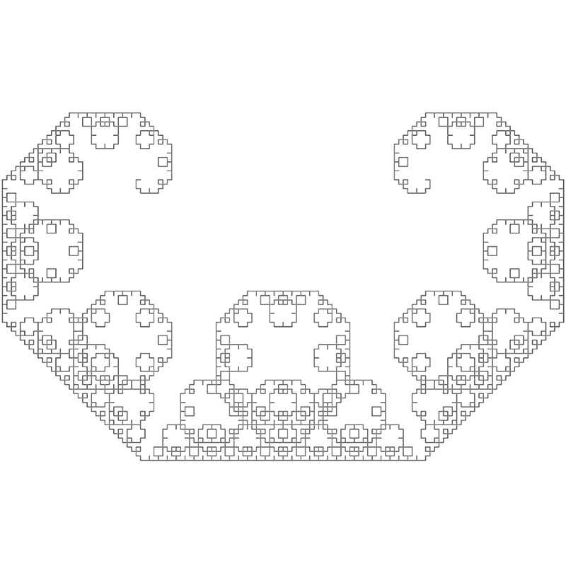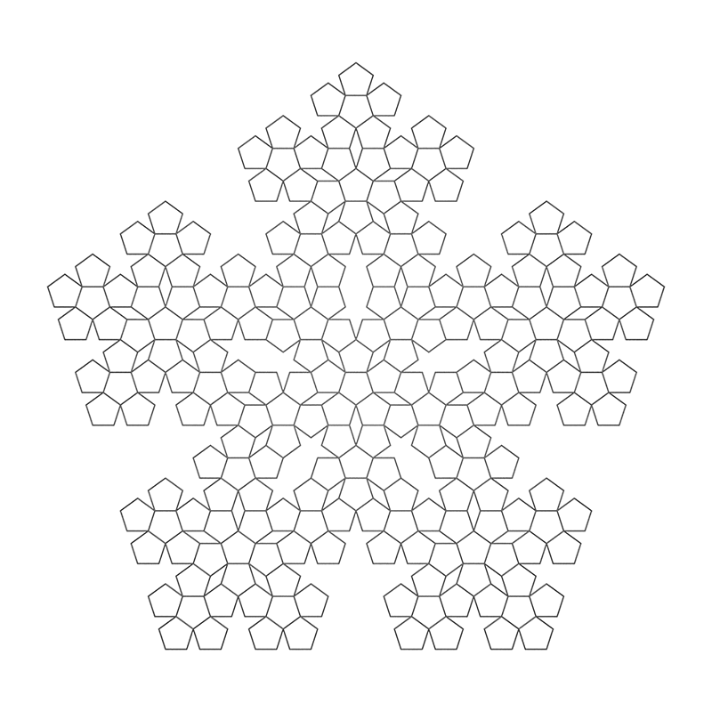
Figure 8: (A, top) Levy Curve, based on 45° angle turns. (B, bottom) Pentaplexity, based on 36°angle turns.
We would also be interested in exploring further user-customization of L-Systems. While the current system allows for customizable axioms, this could be expanded to allow users to create unique L-Systems with custom rules and customizable angle turns. This would provide ease for researchers (or other people interested in fractals) to develop new L-Systems.
Results
The following are some of the performance metrics of our system. Across the board, the FPGA exhibits a faster computation time than the baseline Python script. For the maximum number of iterations on each of our 6 L-systems, the worst speedup was 5.1x, and the best was 77.8x with an average of about 20.04x. This is due to a number of factors including the line length and growth rate.
.png)
Figure 9: Execution time per character vs. Number of Iterations. Comparing the performance between the Python and FPGA when graphing the Tessellated Triangle.
Let’s take a look at this graph above. This chart shows the execution time per character for the Python and FPGA calculating the tessellated triangle. It appears that for the FPGA, there is some initial overhead with the first few iterations. This overhead is nullified by the law of large numbers at higher iterations, allowing the FPGA to settle to around 200 us per character for both the length 7 and length 10 versions. However, this does not appear to be the case for the Python code. The length 7 code takes about 3.6 ms per character, while the length 10 code takes 17ms. Additionally, although this is merely an observation, generally, the less iterations it takes to fill up the M10K blocks, i.e. a higher growth rate, the larger the disparity between the Python and FPGA.
{kind=link}
Figure 10: The Dragon Curve with 11 iterations (the largest possible in our implementation), with a length of 4, graphed in the center of the screen (300,300).

Figure 11: Execution time per character vs. Number of Iterations. Comparing the performance between the Python and FPGA when graphing the Dragon Curve
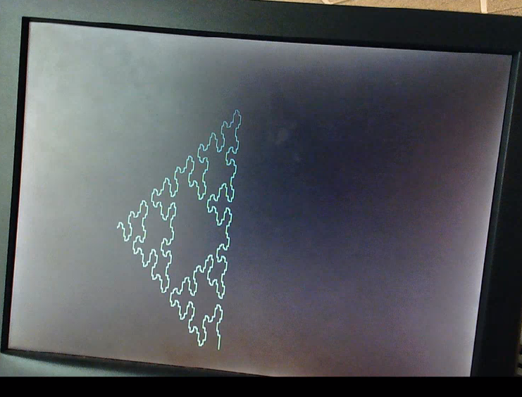
Figure 12: Sierpinski Arrowhead (1) with 5 iterations with a length of 10, graphed starting at (300,450).
.png)
Figure 13: Execution time per character vs. Number of Iterations. Comparing the performance between the Python and FPGA when graphing Sierpinski Arrowhead (1).
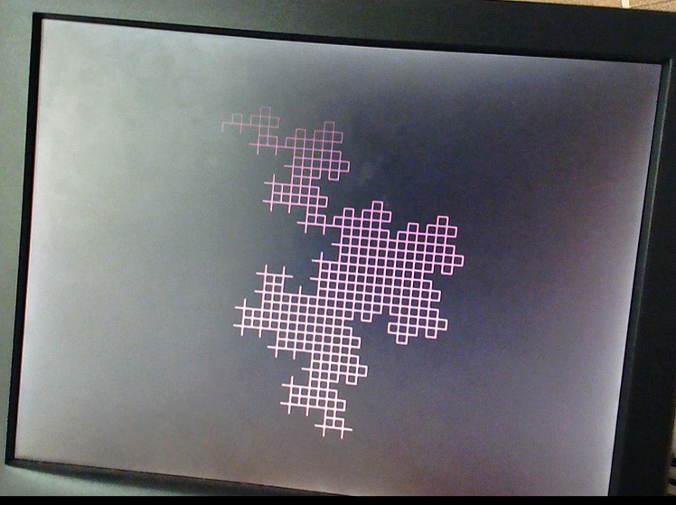
Figure 14: Cross with 4 iterations with a length of 10, graphed starting at (200,100).
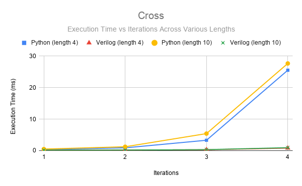Figure 15: Execution time per character vs. Number of Iterations. Comparing the performance between the Python and FPGA when graphing Cross.
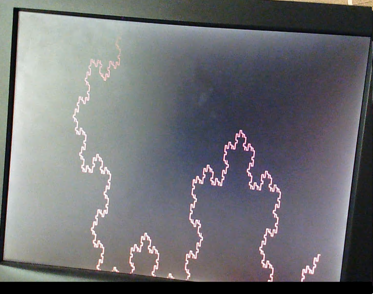
Figure 16: Koch Snowflake with 6 iterations with a length of 7, graphed starting at (600,400).

Figure 17: Execution time per character vs. Number of Iterations. Comparing the performance between the Python and FPGA when graphing the Koch Snowflake.
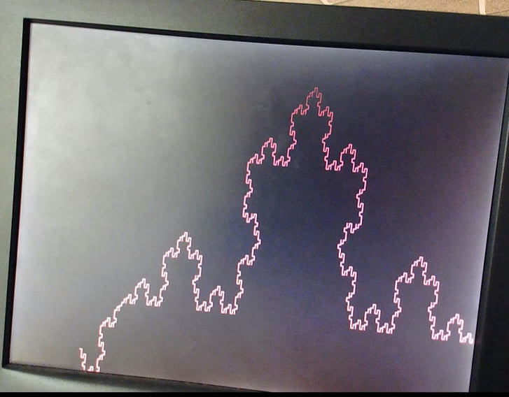Figure 18: Koch Curve with 6 iterations with a length of 7, graphed starting at (100,450).

Figure 19: Execution time per character vs. Number of Iterations. Comparing the performance between the Python and FPGA when graphing the Koch Curve.
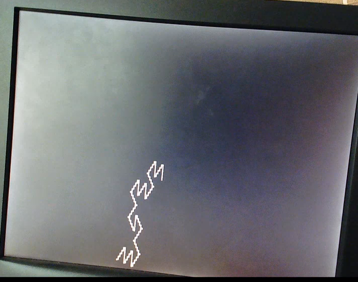Figure 20: Tessellated Triangle with 6 iterations (the largest possible in our implementation), with a length of 30, graphed in the center of the screen (300,300).

Figure 21: Execution time per character vs. Number of Iterations. Comparing the performance between the Python and FPGA when graphing the Tessellated Triangle.
The M10K blocks are a limiting factor in our generation of L-Systems. As shown in these graphs, not all L-Systems are equal in terms of how fast they grow. The maximum number of characters is 8192. However, due to exponential growth, some of the largest systems we can generate are significantly less than this threshold. Additionally, we are sometimes inhibited by the negative value computation difficulty mentioned earlier. Below is a chart of the L-Systems and their maximum size on our system. Generally, there are few differences between the FPGA for edges of length 7 and length 10. For the python, it takes longer to generate the length 10 versus length 7 images. Within the results, there is only one instance of the negative values causing the FPGA to have a lower number of iterations for the length 10 graph than the length 7 graph. In all other cases, the max number of iterations is set by the M10K blocks.
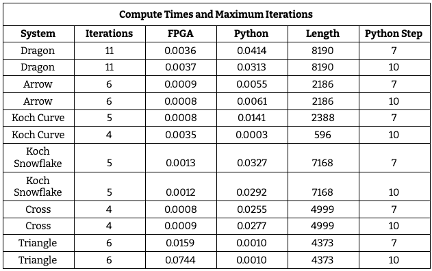A full working demo of our entire system can be found below:
Conclusion
Our original idea was to be able to animate the drawing of a fractal to the VGA screen. The user would be able to input the number of iterations and the length of the step size. They would then choose between generating a dragon curve and a fractal plant. We also envisioned adding randomness to the L-system generation. This would have been done by selecting a random rule for the given character out of a set of applicable rules, or choosing no rule and passing the character. Finally, we wanted to be able to generate multiple L-Systems simultaneously. We thought it would be interesting to have a group of trees on the screen with their own unique attributes.
Our final system is a more user driven experience. The user is allowed to select from a variety of different
L-Systems, input a desired axiom, the number of iterations, the line length, line color, and the starting
position on the screen. These values are then passed to the FPGA. The rules module is called on
the axiom,
transforming it one character at a time based on the desired L-System. This is then fed into one of the
dual_clock_ram modules. The create_system module will then ping-pong between the
dual_clock_ram
modules until
the iteration threshold is reached. The values in the M10K are then passed to the top level for graphing.
Based on the L-System, the top-level will determine the angle and coordinates of every line segment, write the
pixels to the VGA. Once this is complete, the system will be ready to accept another user input.
Unfortunately, the system is not perfect. We encountered limits on graphing in terms of the number of characters we could hold and the appearance of lines on the screen. Specifically, the M10K blocks have a finite size we cannot exceed. If we were to do this project again, we would more thoroughly investigate the size of the M10K blocks we could use in relation to access time. On the graphing end, we would implement signed registers rather than unsigned registers to mitigate the negative value issue. We would also experiment with different diagonal line drawing algorithms, at high iterations, some lines do not perfectly connect with one another. Additionally, as a feature we wish we had implemented, we would want to attempt user defined rules. This would allow a user the creative freedom to explore any L-system they desired within the character limit for rules.
In terms of safety, this project was done entirely remotely. The boards were stored in a safe, grounded environment. Students connected to them through a remote desktop to assigned computers. This was done for the health and safety of everyone involved, but also reduced the likelihood of physical damage to the boards and computers. Regarding intellectual property, the initial python code is an open source program we found. We translated this into C for our proof of concept running on the HPS. Furthermore, the base computer system module we wrote our L-system accelerator around is not ours. The base system was taken from Bruce Land’s ECE 5760 website. We modified the base as necessary for the accelerator.
Appendices
Team
{kind=link}
Priya Kattapurath
ECE '20, MEng '21
{kind=link}
Michael Rivera
ECE '20, MEng '20
{kind=link}
Caitlin Stanton
ECE '20, MEng '21
Appendix A: Permissions
The group approves this report for inclusion on the course website. The group approves the video for inclusion on the course YouTube channel.
Appendix B: Work Distribution
All members contributed to the development, debugging, and demoing of the baseline and full-system designs.
- Introduction - Caitlin
- High-Level Design - Caitlin
- Baseline Design - Caitlin
- Full System Design - Priya, Caitlin, Michael
- Testing - Caitlin, Priya
- Future Work - Priya
- Results - Michael
- Conclusion - Michael
- Commented Code - Caitlin
- Diagrams - Priya
- Graphs - Caitlin, Michael
Appendix C: References
- Wikipedia: L-System
- Wolfram Alpha: Lindenmayer Systems
- What are Fractals?
- Coding a Dragon Curve
- Coding a Fractal Plant
- Wikipedia: Dragon curve
- Drawing nice L-Systems
- Drawing nice stochastic plants
- ECE 5760: VGA examples
- Recursive Modules
- Avalon Bus Master
Appendix D: Code
Here are the major files referenced in this lab report. The entirety of our code repository can be found in this Github repository.
rules.v
//////////////////////////////////////////////////////////////////////// // RULES.V // Responsible for computing and storing the L-System // (Priya Kattappurath, Michael Rivera, Caitlin Stanton) //////////////////////////////////////////////////////////////////////// // Dual Clock RAM // Equivalent to instantiating ~8 M10Ks module dual_clock_ram(q, d, write_address, read_address, we, clk1, clk2); output reg [7:0] q; input [7:0] d; input [12:0] write_address, read_address; input we, clk1, clk2; reg [12:0] read_address_reg; reg [7:0] mem [8191:0]; //8192 memory locations always @ (posedge clk1) begin if (we) mem[write_address] <= d; end always @ (posedge clk2) begin q <= mem[read_address_reg]; read_address_reg <= read_address; end endmodule // Fixed point signed multiplier // Works in 11.21 fixed point module signed_mult (out, a, b); //11.21 fixed point output signed [31:0] out; input signed [31:0] a; input signed [31:0] b; // intermediate full bit length wire signed [63:0] mult_out; assign mult_out = a * b; // select bits for 11.21 fixed point assign out = {mult_out[63], mult_out[51:21]}; //11.21 fixed point endmodule // Rule module // Declares rules for 7 L-Systems: Dragon curve, 2 Sierpinski arrowheads, 2 Koch curves, cross, tessellated triangle // (Equivalent to applyRule in lsystem.py) module rules(clk, reset, lsystem, rule_val, rule_prev, rule_result, rule_done); input clk, reset, rule_val; input [2:0] lsystem; input [7:0] rule_prev; //8 bit input, defined by ASCII code output [79:0] rule_result; //up to 80 bit output output [1:0] rule_done; reg [7:0] rule_prev_reg; reg [1:0] rule_done_reg; reg [79:0] rule_result_reg; reg [2:0] rule_state_reg; assign rule_result = rule_result_reg; assign rule_done = rule_done_reg; //ASCII definitions of alphabet localparam [7:0] X = 8'b01011000; localparam [7:0] Y = 8'b01011001; localparam [7:0] plus = 8'd43; //+ localparam [7:0] minus = 8'd45; //- localparam [7:0] F = 8'd70; localparam [7:0] A = 8'd65; //FSM states localparam RULE_UPDATE = 3'b0; localparam DRAGON_TRANSLATE = 3'b1; localparam TRIANGLE_TRANSLATE = 3'd2; localparam ARROW_TRANSLATE = 3'd3; localparam KOCH_TRANSLATE = 3'd4; localparam SNOWFLAKE_TRANSLATE = 3'd5; localparam CROSS_TRANSLATE = 3'd6; localparam TESSELLATE_TRANSLATE = 3'd7; always @ (posedge clk) begin //reset state if (reset) begin rule_result_reg <= 80'b0; rule_done_reg <= 2'b0; rule_prev_reg <= rule_prev; rule_state_reg <= RULE_UPDATE; end else begin case (rule_state_reg) //waits for new character to apply rule to RULE_UPDATE: begin rule_prev_reg <= rule_prev; rule_result_reg <= rule_result_reg; if (rule_val) begin //if new character has arrived rule_done_reg <= 2'b0; //choose which state to transition to based on inputted lsystem if (lsystem == 3'b0) begin rule_state_reg <= DRAGON_TRANSLATE; end else if (lsystem == 3'b1) begin rule_state_reg <= TRIANGLE_TRANSLATE; end else if (lsystem == 3'd2) begin rule_state_reg <= KOCH_TRANSLATE; end else if (lsystem == 3'd3) begin rule_state_reg <= ARROW_TRANSLATE; end else if (lsystem == 3'd4) begin rule_state_reg <= SNOWFLAKE_TRANSLATE; end else if (lsystem == 3'd5) begin rule_state_reg <= CROSS_TRANSLATE; end else if (lsystem == 3'd6) begin rule_state_reg <= TESSELLATE_TRANSLATE; end else begin rule_state_reg <= RULE_UPDATE; end end else begin //stays in this state until a valid character is received rule_done_reg <= rule_done_reg; rule_state_reg <= RULE_UPDATE; end end //RULE APPLICATION STATES //If the inputted character matches a rule, output that string //Otherwise output the character //Buffered by zeroes to be 10 bytes (80 bits) //Dragon curve DRAGON_TRANSLATE: begin rule_prev_reg <= rule_prev_reg; if (rule_prev_reg == X) begin rule_done_reg <= 2'b1; rule_result_reg <= {X, plus, Y, F, plus, 40'b0}; //"X+YF+" end else if (rule_prev_reg == Y) begin rule_done_reg <= 2'd2; rule_result_reg <= {minus, F, X, minus, Y, 40'b0}; //"-FX-Y" end else begin rule_done_reg <= 2'd3; rule_result_reg <= {rule_prev_reg, 72'b0}; end rule_state_reg <= RULE_UPDATE; end //Sierpsinki arrowhead (1) TRIANGLE_TRANSLATE: begin rule_prev_reg <= rule_prev_reg; if (rule_prev_reg == X) begin rule_done_reg <= 2'b1; rule_result_reg <= {Y, F, plus, X, F, plus, Y, 24'b0}; //"YF+XF+Y" end else if (rule_prev_reg == Y) begin rule_done_reg <= 2'd2; rule_result_reg <= {X, F, minus, Y, F, minus, X, 24'b0}; //"XF-YF-X" end else begin rule_done_reg <= 2'd3; rule_result_reg <= {rule_prev_reg, 72'b0}; end rule_state_reg <= RULE_UPDATE; end //Sierpinski arrowhead (2) ARROW_TRANSLATE: begin rule_prev_reg <= rule_prev_reg; if (rule_prev_reg == A) begin rule_done_reg <= 2'b1; rule_result_reg <= {plus, F, minus, A, minus, F, plus, 24'b0}; //"+F-A-F+" end else if (rule_prev_reg == F) begin rule_done_reg <= 2'd2; rule_result_reg <= {minus, A, plus, F, plus, A, minus, 24'b0}; //"-A+F+A-" end else begin rule_done_reg <= 2'd3; rule_result_reg <= {rule_prev_reg, 72'b0}; end rule_state_reg <= RULE_UPDATE; end //Koch curve KOCH_TRANSLATE: begin rule_prev_reg <= rule_prev_reg; if (rule_prev_reg == F) begin rule_done_reg <= 2'b1; rule_result_reg <= {F, plus, F, minus, minus, F, plus, F, 16'b0}; //"F+F--F+F" end else begin rule_done_reg <= 2'd3; rule_result_reg <= {rule_prev_reg, 72'b0}; end rule_state_reg <= RULE_UPDATE; end //Koch snowflake SNOWFLAKE_TRANSLATE: begin rule_prev_reg <= rule_prev_reg; if (rule_prev_reg == F) begin rule_done_reg <= 2'b1; rule_result_reg <= {F, minus, F, plus, plus, F, minus, F, 16'b0}; //"F-F++F-F" end else begin rule_done_reg <= 2'd3; rule_result_reg <= {rule_prev_reg, 72'b0}; end rule_state_reg <= RULE_UPDATE; end //Cross CROSS_TRANSLATE: begin rule_prev_reg <= rule_prev_reg; if (rule_prev_reg == F) begin rule_done_reg <= 2'b1; rule_result_reg <= {F, plus, F, F, plus, plus, F, plus, F, 8'b0}; //"F+FF++F+F" end else begin rule_done_reg <= 2'd3; rule_result_reg <= {rule_prev_reg, 72'b0}; end rule_state_reg <= RULE_UPDATE; end //Tessellated triangle TESSELLATE_TRANSLATE: begin rule_prev_reg <= rule_prev_reg; if (rule_prev_reg == F) begin rule_done_reg <= 2'b1; rule_result_reg <= {F, minus, F, plus, F, 40'b0}; //"F-F+F" end else begin rule_done_reg <= 2'd3; rule_result_reg <= {rule_prev_reg, 72'b0}; end rule_state_reg <= RULE_UPDATE; end endcase end end endmodule // Create System module // Performs given number of iterations on the L-System string // Stores strings in memory // Sends result of each iteration byte by byte to the top-level // (Equivalent to createSystem and processString in lsystem.py) module create_system(clk, reset, top_rdy, top_graphing, lsystem, iterations, system_input_string, system_output_string, system_val, system_done, iterations_counter); //equivalent to createSystem() in translated_python.c input clk, reset, top_rdy; input [1:0] top_graphing; input [31:0] system_input_string; input [2:0] lsystem; input [3:0] iterations; output [7:0] system_output_string; output system_val; output system_done; output [3:0] iterations_counter; //ASCII definitions of alphabet localparam [7:0] X = 8'b01011000; localparam [7:0] Y = 8'b01011001; localparam [7:0] plus = 8'd43; //+ localparam [7:0] minus = 8'd45; //- localparam [7:0] F = 8'd70; localparam [7:0] A = 8'd65; localparam [7:0] open_bracket = 8'd91; //[ localparam [7:0] closing_bracket = 8'd93; //] //dual_clock_ram instantiations (M10K memory) wire [7:0] a_q; wire [7:0] a_d; reg[7:0] a_d_reg; wire [12:0] a_write_address; reg [12:0] a_write_address_reg; wire [12:0] a_read_address; reg [12:0] a_read_address_reg; wire a_we; reg a_we_reg; assign a_d = a_d_reg; assign a_write_address = a_write_address_reg; assign a_read_address = a_read_address_reg; assign a_we = a_we_reg; dual_clock_ram a( .q (a_q), .d (a_d), .write_address (a_write_address), .read_address (a_read_address), .we (a_we), .clk1 (clk), .clk2 (clk) ); wire [7:0] b_q; wire [7:0] b_d; reg[7:0] b_d_reg; wire [12:0] b_write_address; reg [12:0] b_write_address_reg; wire [12:0] b_read_address; reg [12:0] b_read_address_reg; wire b_we; reg b_we_reg; assign b_d = b_d_reg; assign b_write_address = b_write_address_reg; assign b_read_address = b_read_address_reg; assign b_we = b_we_reg; dual_clock_ram b( .q (b_q), .d (b_d), .write_address (b_write_address), .read_address (b_read_address), .we (b_we), .clk1 (clk), .clk2 (clk) ); //rules module reg rule_val_reg; wire [79:0] rule_result; reg [79:0] rule_result_reg; wire [1:0] rule_done; wire rule_val; reg [7:0] input_char_reg; wire [7:0] input_char; assign rule_val = rule_val_reg; assign input_char = input_char_reg; rules rule( .clk (clk), .reset (reset), .lsystem (lsystem), .rule_prev (input_char), .rule_result (rule_result), .rule_done (rule_done), .rule_val (rule_val) ); //FSM states localparam RESET_SYSTEM = 4'd0; localparam CLEAR_M10KS = 4'd1; localparam GET_CHAR = 4'd2; localparam READ_M10K = 4'd3; localparam COMPUTE_DRAGON = 4'd4; localparam WRITE_M10K_A = 4'd5; localparam INCREMENT_WRITE_A = 4'd6; localparam WRITE_M10K_B = 4'd7; localparam INCREMENT_WRITE_B = 4'd8; localparam NEXT_BYTE = 4'd9; localparam INCREMENT_ITER = 4'd10; localparam ZERO_READ = 4'd11; localparam DONE = 4'd12; reg [3:0] state_reg; reg [7:0] system_output_string_reg; reg [7:0] output_counter; reg [3:0] iterations_counter_reg; reg system_val_reg; reg system_done_reg; reg [31:0] axiom; reg [1:0] read_counter; assign system_output_string = system_output_string_reg; assign system_val = system_val_reg; assign system_done = system_done_reg; assign iterations_counter = iterations_counter_reg; always @ (posedge clk) begin //reset state, board startup if (reset) begin iterations_counter_reg <= 4'b0; input_char_reg <= 8'b0; a_d_reg <= 8'b0; a_write_address_reg <= 13'b0; a_read_address_reg <= 13'b0; a_we_reg <= 1'b0; b_d_reg <= 8'b0; b_write_address_reg <= 13'b0; b_read_address_reg <= 13'b0; b_we_reg <= 1'b0; axiom <= system_input_string; rule_result_reg <= rule_result; read_counter <= 1'b0; system_val_reg <= 1'b0; system_output_string_reg <= 8'b0; system_done_reg <= 1'b0; state_reg <= CLEAR_M10KS; end else begin case (state_reg) //reset state, new L-System RESET_SYSTEM: begin if (reset) begin iterations_counter_reg <= 4'b0; input_char_reg <= 8'b0; a_d_reg <= 8'b0; a_write_address_reg <= 13'b0; a_read_address_reg <= 13'b0; a_we_reg <= 1'b0; b_d_reg <= 8'b0; b_write_address_reg <= 13'b0; b_read_address_reg <= 13'b0; b_we_reg <= 1'b0; axiom <= system_input_string; rule_result_reg <= rule_result; read_counter <= 1'b0; system_val_reg <= 1'b0; system_output_string_reg <= 8'b0; system_done_reg <= 1'b0; state_reg <= CLEAR_M10KS; end else begin state_reg <= RESET_SYSTEM; end end //sets all M10K data to zero CLEAR_M10KS: begin a_d_reg <= 8'b0; b_d_reg <= 8'b0; if (a_write_address_reg < 13'h1FFF) begin a_we_reg <= 1'b1; a_write_address_reg <= a_write_address_reg + 13'b1; end if (b_write_address_reg < 13'h1FFF) begin b_we_reg <= 1'b1; b_write_address_reg <= b_write_address_reg + 13'b1; end if (a_write_address_reg == 13'h1FFF && b_write_address_reg == 13'h1FFF) begin a_we_reg <= 1'b0; b_we_reg <= 1'b0; a_write_address_reg <= 13'b0; b_write_address_reg <= 13'b0; state_reg <= GET_CHAR; end else begin state_reg <= CLEAR_M10KS; end end //grabs the next character in the string to process, either from the axiom or M10K memory GET_CHAR: begin a_d_reg <= 8'b0; a_write_address_reg <= a_write_address_reg; a_read_address_reg <= a_read_address_reg; a_we_reg <= 1'b0; b_d_reg <= 8'b0; b_write_address_reg <= b_write_address_reg; b_read_address_reg <= b_read_address_reg; b_we_reg <= 1'b0; rule_result_reg <= rule_result; read_counter <= 1'b0; system_val_reg <= 1'b0; system_output_string_reg <= system_output_string_reg; system_done_reg <= 1'b0; if (top_rdy == 1'b0) begin state_reg <= GET_CHAR; end else begin if (iterations_counter_reg == 4'b0) begin input_char_reg <= axiom[7:0]; state_reg <= COMPUTE_DRAGON; end else if (iterations_counter_reg < iterations) begin state_reg <= READ_M10K; end else begin state_reg <= DONE; end end end //Reads from either of the M10Ks depending on the iteration count //Requires 3 clock cycles with dual_port_ram READ_M10K: begin a_d_reg <= 8'b0; a_write_address_reg <= a_write_address_reg; a_read_address_reg <= a_read_address_reg; a_we_reg <= 1'b0; b_d_reg <= 8'b0; b_write_address_reg <= b_write_address_reg; b_read_address_reg <= b_read_address_reg; b_we_reg <= 1'b0; rule_result_reg <= rule_result; read_counter <= read_counter; system_val_reg <= 1'b0; system_done_reg <= 1'b0; if (iterations_counter_reg[0] == 1'b1) begin input_char_reg <= a_q; end else begin input_char_reg <= b_q; end state_reg <= COMPUTE_DRAGON; if (iterations_counter_reg[0] == 1'b0) begin b_read_address_reg <= b_read_address_reg + 13'b1; end else begin a_read_address_reg <= a_read_address_reg + 13'b1; end end //Sends character to the rules module to be processed COMPUTE_DRAGON: begin a_d_reg <= 8'b0; a_write_address_reg <= a_write_address_reg; a_read_address_reg <= a_read_address_reg; a_we_reg <= 1'b0; b_d_reg <= 8'b0; b_write_address_reg <= b_write_address_reg; b_read_address_reg <= b_read_address_reg; b_we_reg <= 1'b0; rule_result_reg <= rule_result; rule_val_reg <= 1'b1; read_counter <= 1'b0; system_val_reg <= 1'b0; system_output_string_reg <= system_output_string_reg; system_done_reg <= 1'b0; if (rule_done > 2'b0) begin if (iterations_counter_reg[0] == 1'b0) begin state_reg <= WRITE_M10K_A; end else begin state_reg <= WRITE_M10K_B; end end else begin state_reg <= COMPUTE_DRAGON; end end //Writes to M10K A memory on even iterations //Determines if entire result from rules has been written to memory //Sends result from rules byte by byte to top level WRITE_M10K_A: begin a_d_reg <= rule_result_reg[79:72]; a_write_address_reg <= a_write_address_reg; a_read_address_reg <= a_read_address_reg; rule_result_reg <= rule_result_reg; read_counter <= 1'b0; system_done_reg <= 1'b0; system_output_string_reg <= rule_result_reg[79:72]; if (rule_result_reg == 80'b0) begin a_we_reg <= 1'b0; system_val_reg <= 1'b0; state_reg <= NEXT_BYTE; end else begin a_we_reg <= 1'b1; if (top_rdy == 1'b1) begin system_val_reg <= 1'b1; state_reg <= INCREMENT_WRITE_A; end else begin system_val_reg <= 1'b0; state_reg <= WRITE_M10K_A; end end end //Increments write address for M10K A to write entire result to memory INCREMENT_WRITE_A: begin system_output_string_reg <= system_output_string_reg; a_write_address_reg <= a_write_address_reg + 13'b1; a_we_reg <= 1'b0; rule_result_reg <= rule_result_reg << 8; read_counter <= 1'b0; system_val_reg <= 1'b0; system_done_reg <= 1'b0; state_reg <= WRITE_M10K_A; end //Writes to M10K B memory on odd iterations //Determines if entire result from rules has been written to memory //Sends result from rules byte by byte to top level WRITE_M10K_B: begin b_d_reg <= rule_result_reg[79:72]; b_write_address_reg <= b_write_address_reg; b_read_address_reg <= b_read_address_reg; rule_result_reg <= rule_result_reg; read_counter <= 1'b0; system_done_reg <= 1'b0; system_output_string_reg <= rule_result_reg[79:72]; if (rule_result_reg == 80'b0) begin b_we_reg <= 1'b0; system_val_reg <= 1'b0; state_reg <= NEXT_BYTE; end else begin b_we_reg <= 1'b1; if (top_rdy == 1'b1) begin system_val_reg <= 1'b1; state_reg <= INCREMENT_WRITE_B; end else begin system_val_reg <= 1'b0; state_reg <= WRITE_M10K_B; end end end //Increments write address for M10K B to write entire result to memory INCREMENT_WRITE_B: begin system_output_string_reg <= system_output_string_reg; b_write_address_reg <= b_write_address_reg + 13'b1; b_we_reg <= 1'b0; rule_result_reg <= rule_result_reg << 8; read_counter <= 1'b0; system_val_reg <= 1'b0; system_done_reg <= 1'b0; state_reg <= WRITE_M10K_B; end //Shifts the axiom to indicate a character has been fully processed and written to memory NEXT_BYTE: begin axiom <= axiom >> 8; read_counter <= 1'b0; system_val_reg <= 1'b0; system_done_reg <= 1'b0; system_output_string_reg <= system_output_string_reg; state_reg <= INCREMENT_ITER; end //Increments the iterations_counter for the L-System //This is done: // - when there's nothing left of axiom and we're on the zeroth iteration // - a zero byte is read from M10K A on an odd iteration // - a zero byte is read from M10K B on an even iteration INCREMENT_ITER: begin read_counter <= 1'b0; system_val_reg <= 1'b0; system_done_reg <= 1'b0; if (system_output_string_reg == 8'b0 && axiom == 32'b0 && top_graphing == 2'd2) begin if ( iterations_counter_reg == 4'b0 || (iterations_counter_reg[0] == 1'b1 && a_q == 8'b0) || (iterations_counter_reg[0] == 1'b0 && b_q == 8'b0)) begin a_write_address_reg <= 13'b0; b_write_address_reg <= 13'b0; iterations_counter_reg <= iterations_counter_reg + 4'b1; state_reg <= ZERO_READ; end else begin state_reg <= GET_CHAR; end end else begin state_reg <= GET_CHAR; end end //Zeroes out the read addresses so that they'll start at the top of the M10K in the next iteration ZERO_READ: begin if (iterations_counter[0] == 1'b0) begin a_read_address_reg <= a_read_address_reg; b_read_address_reg <= 13'b0; end else begin a_read_address_reg <= 13'b0; b_read_address_reg <= b_read_address_reg; end state_reg <= GET_CHAR; end //Designated number of iterations has been performed on the L-System DONE: begin system_done_reg <= 1'b1; a_write_address_reg <= 13'b0; b_write_address_reg <= 13'b0; a_read_address_reg <= 13'b0; b_read_address_reg <= 13'b0; state_reg <= RESET_SYSTEM; end endcase end end endmodule
DE1_SoC_Computer.v
//////////////////////////////////////////////////////////////////////// // DE1_SOC_COMPUTER.V // Top level program // Responsible for receiving user input from the HPS and graphing // (Priya Kattappurath, Michael Rivera, Caitlin Stanton) //////////////////////////////////////////////////////////////////////// module DE1_SoC_Computer ( //////////////////////////////////// // FPGA Pins //////////////////////////////////// // Clock pins CLOCK_50, CLOCK2_50, CLOCK3_50, CLOCK4_50, // ADC ADC_CS_N, ADC_DIN, ADC_DOUT, ADC_SCLK, // Audio AUD_ADCDAT, AUD_ADCLRCK, AUD_BCLK, AUD_DACDAT, AUD_DACLRCK, AUD_XCK, // SDRAM DRAM_ADDR, DRAM_BA, DRAM_CAS_N, DRAM_CKE, DRAM_CLK, DRAM_CS_N, DRAM_DQ, DRAM_LDQM, DRAM_RAS_N, DRAM_UDQM, DRAM_WE_N, // I2C Bus for Configuration of the Audio and Video-In Chips FPGA_I2C_SCLK, FPGA_I2C_SDAT, // 40-Pin Headers GPIO_0, GPIO_1, // Seven Segment Displays HEX0, HEX1, HEX2, HEX3, HEX4, HEX5, // IR IRDA_RXD, IRDA_TXD, // Pushbuttons KEY, // LEDs LEDR, // PS2 Ports PS2_CLK, PS2_DAT, PS2_CLK2, PS2_DAT2, // Slider Switches SW, // Video-In TD_CLK27, TD_DATA, TD_HS, TD_RESET_N, TD_VS, // VGA VGA_B, VGA_BLANK_N, VGA_CLK, VGA_G, VGA_HS, VGA_R, VGA_SYNC_N, VGA_VS, //////////////////////////////////// // HPS Pins //////////////////////////////////// // DDR3 SDRAM HPS_DDR3_ADDR, HPS_DDR3_BA, HPS_DDR3_CAS_N, HPS_DDR3_CKE, HPS_DDR3_CK_N, HPS_DDR3_CK_P, HPS_DDR3_CS_N, HPS_DDR3_DM, HPS_DDR3_DQ, HPS_DDR3_DQS_N, HPS_DDR3_DQS_P, HPS_DDR3_ODT, HPS_DDR3_RAS_N, HPS_DDR3_RESET_N, HPS_DDR3_RZQ, HPS_DDR3_WE_N, // Ethernet HPS_ENET_GTX_CLK, HPS_ENET_INT_N, HPS_ENET_MDC, HPS_ENET_MDIO, HPS_ENET_RX_CLK, HPS_ENET_RX_DATA, HPS_ENET_RX_DV, HPS_ENET_TX_DATA, HPS_ENET_TX_EN, // Flash HPS_FLASH_DATA, HPS_FLASH_DCLK, HPS_FLASH_NCSO, // Accelerometer HPS_GSENSOR_INT, // General Purpose I/O HPS_GPIO, // I2C HPS_I2C_CONTROL, HPS_I2C1_SCLK, HPS_I2C1_SDAT, HPS_I2C2_SCLK, HPS_I2C2_SDAT, // Pushbutton HPS_KEY, // LED HPS_LED, // SD Card HPS_SD_CLK, HPS_SD_CMD, HPS_SD_DATA, // SPI HPS_SPIM_CLK, HPS_SPIM_MISO, HPS_SPIM_MOSI, HPS_SPIM_SS, // UART HPS_UART_RX, HPS_UART_TX, // USB HPS_CONV_USB_N, HPS_USB_CLKOUT, HPS_USB_DATA, HPS_USB_DIR, HPS_USB_NXT, HPS_USB_STP ); //======================================================= // PARAMETER declarations //======================================================= //======================================================= // PORT declarations //======================================================= //////////////////////////////////// // FPGA Pins //////////////////////////////////// // Clock pins input CLOCK_50; input CLOCK2_50; input CLOCK3_50; input CLOCK4_50; // ADC inout ADC_CS_N; output ADC_DIN; input ADC_DOUT; output ADC_SCLK; // Audio input AUD_ADCDAT; inout AUD_ADCLRCK; inout AUD_BCLK; output AUD_DACDAT; inout AUD_DACLRCK; output AUD_XCK; // SDRAM output [12: 0] DRAM_ADDR; output [ 1: 0] DRAM_BA; output DRAM_CAS_N; output DRAM_CKE; output DRAM_CLK; output DRAM_CS_N; inout [15: 0] DRAM_DQ; output DRAM_LDQM; output DRAM_RAS_N; output DRAM_UDQM; output DRAM_WE_N; // I2C Bus for Configuration of the Audio and Video-In Chips output FPGA_I2C_SCLK; inout FPGA_I2C_SDAT; // 40-pin headers inout [35: 0] GPIO_0; inout [35: 0] GPIO_1; // Seven Segment Displays output [ 6: 0] HEX0; output [ 6: 0] HEX1; output [ 6: 0] HEX2; output [ 6: 0] HEX3; output [ 6: 0] HEX4; output [ 6: 0] HEX5; // IR input IRDA_RXD; output IRDA_TXD; // Pushbuttons input [ 3: 0] KEY; // LEDs output [ 9: 0] LEDR; // PS2 Ports inout PS2_CLK; inout PS2_DAT; inout PS2_CLK2; inout PS2_DAT2; // Slider Switches input [ 9: 0] SW; // Video-In input TD_CLK27; input [ 7: 0] TD_DATA; input TD_HS; output TD_RESET_N; input TD_VS; // VGA output [ 7: 0] VGA_B; output VGA_BLANK_N; output VGA_CLK; output [ 7: 0] VGA_G; output VGA_HS; output [ 7: 0] VGA_R; output VGA_SYNC_N; output VGA_VS; //////////////////////////////////// // HPS Pins //////////////////////////////////// // DDR3 SDRAM output [14: 0] HPS_DDR3_ADDR; output [ 2: 0] HPS_DDR3_BA; output HPS_DDR3_CAS_N; output HPS_DDR3_CKE; output HPS_DDR3_CK_N; output HPS_DDR3_CK_P; output HPS_DDR3_CS_N; output [ 3: 0] HPS_DDR3_DM; inout [31: 0] HPS_DDR3_DQ; inout [ 3: 0] HPS_DDR3_DQS_N; inout [ 3: 0] HPS_DDR3_DQS_P; output HPS_DDR3_ODT; output HPS_DDR3_RAS_N; output HPS_DDR3_RESET_N; input HPS_DDR3_RZQ; output HPS_DDR3_WE_N; // Ethernet output HPS_ENET_GTX_CLK; inout HPS_ENET_INT_N; output HPS_ENET_MDC; inout HPS_ENET_MDIO; input HPS_ENET_RX_CLK; input [ 3: 0] HPS_ENET_RX_DATA; input HPS_ENET_RX_DV; output [ 3: 0] HPS_ENET_TX_DATA; output HPS_ENET_TX_EN; // Flash inout [ 3: 0] HPS_FLASH_DATA; output HPS_FLASH_DCLK; output HPS_FLASH_NCSO; // Accelerometer inout HPS_GSENSOR_INT; // General Purpose I/O inout [ 1: 0] HPS_GPIO; // I2C inout HPS_I2C_CONTROL; inout HPS_I2C1_SCLK; inout HPS_I2C1_SDAT; inout HPS_I2C2_SCLK; inout HPS_I2C2_SDAT; // Pushbutton inout HPS_KEY; // LED inout HPS_LED; // SD Card output HPS_SD_CLK; inout HPS_SD_CMD; inout [ 3: 0] HPS_SD_DATA; // SPI output HPS_SPIM_CLK; input HPS_SPIM_MISO; output HPS_SPIM_MOSI; inout HPS_SPIM_SS; // UART input HPS_UART_RX; output HPS_UART_TX; // USB inout HPS_CONV_USB_N; input HPS_USB_CLKOUT; inout [ 7: 0] HPS_USB_DATA; input HPS_USB_DIR; input HPS_USB_NXT; output HPS_USB_STP; //======================================================= // REG/WIRE declarations //======================================================= wire [15: 0] hex3_hex0; //wire [15: 0] hex5_hex4; //assign HEX0 = ~hex3_hex0[ 6: 0]; // hex3_hex0[ 6: 0]; //assign HEX1 = ~hex3_hex0[14: 8]; //assign HEX2 = ~hex3_hex0[22:16]; //assign HEX3 = ~hex3_hex0[30:24]; assign HEX4 = 7'b1111111; assign HEX5 = 7'b1111111; HexDigit Digit0(HEX0, hex3_hex0[3:0]); HexDigit Digit1(HEX1, hex3_hex0[7:4]); HexDigit Digit2(HEX2, hex3_hex0[11:8]); HexDigit Digit3(HEX3, hex3_hex0[15:12]); //======================================================= // SRAM/VGA state machine //======================================================= // --Check for sram address=0 nonzero, which means that // HPS wrote some new data. // // --Read sram address 1 and 2 to get x1, y1 // left-most x, upper-most y // --Read sram address 3 and 4 to get x2, y2 // right-most x, lower-most y // --Read sram address 5 to get color // --write a rectangle to VGA // // --clear sram address=0 to signal HPS //======================================================= // Controls for Qsys sram slave exported in system module //======================================================= wire [31:0] sram_readdata ; reg [31:0] data_buffer, sram_writedata ; reg [7:0] sram_address; reg sram_write ; wire sram_clken = 1'b1; wire sram_chipselect = 1'b1; reg [7:0] state ; // rectangle corners reg [9:0] x1, y1, x2, y2 ; reg [31:0] timer ; // may need to throttle write-rate //======================================================= // Controls for VGA memory //======================================================= wire [31:0] vga_out_base_address = 32'h0000_0000 ; // vga base addr reg [7:0] vga_sram_writedata ; reg [31:0] vga_sram_address; reg vga_sram_write ; wire vga_sram_clken = 1'b1; wire vga_sram_chipselect = 1'b1; //======================================================= // pixel address is reg [9:0] vga_x_cood, vga_y_cood ; reg [7:0] pixel_color ; //======================================================= // L SYSTEM MODULE //======================================================= //ASCII alphabet localparam [7:0] X = 8'b01011000; localparam [7:0] Y = 8'b01011001; localparam [7:0] plus = 8'd43; //+ localparam [7:0] minus = 8'd45; //- localparam [7:0] F = 8'd70; localparam [7:0] A = 8'd65; localparam [7:0] open_bracket = 8'd91; //[ localparam [7:0] closing_bracket = 8'd93; //] wire [7:0] system_output_string; wire system_done; wire reset; reg [7:0] system_output_string_reg; reg [7:0] top_char_reg; reg top_done_reg; wire top_rdy; reg top_rdy_reg; assign top_rdy = top_rdy_reg; wire system_val; wire [1:0] top_graphing; reg [1:0] top_graphing_reg; assign top_graphing = top_graphing_reg; reg [31:0] timer_counter_reg; wire [3:0] iterations_counter; // PIO port connections wire [7:0] top_char; assign top_char = top_char_reg; wire [31:0] axiom; wire [3:0] iterations; wire [4:0] length; wire [2:0] lsystem; wire [9:0] start_x, start_y; wire [31:0] timer_counter; assign timer_counter = timer_counter_reg; wire [7:0] color; //create_system module from rules.v // Calculates the L-System string to be graphed create_system system( .clk (CLOCK_50), .reset (reset), .top_rdy (top_rdy), .top_graphing (top_graphing), .lsystem (lsystem), .iterations (iterations), .system_input_string (axiom), .system_output_string (system_output_string), .system_val (system_val), .system_done (system_done), .iterations_counter (iterations_counter) ); //Math for graphing diagonally wire [31:0] root_three = {1'b0,10'b1,21'b1011_1011_0110_0111_1011_0}; wire [31:0] y_triangle_length; //length*(sqrt3)/2 wire [31:0] x_triangle_length = {1'b0, length >> 1, 21'b0}; //length/2 signed_mult triangle_mult( .out (y_triangle_length), .a (root_three), .b (x_triangle_length) ); //FSM states localparam TOP_RESET = 4'd0; localparam TOP_WAIT = 4'd1; localparam TOP_SETUP = 4'd2; localparam TOP_TARGET = 4'd3; localparam TOP_BOUND_CHECK = 4'd4; localparam TOP_GRAPH_DRAGON = 4'd5; localparam TOP_GRAPH_TRIANGLE_X = 4'd6; localparam TOP_GRAPH_TRIANGLE_Y = 4'd7; localparam TOP_SHIFT = 4'd8; localparam TOP_DONE = 4'd9; //Internal registers reg [3:0] top_state_reg; reg [31:0] x_reg; reg [31:0] y_reg; reg [31:0] targetx_reg; //11.21 fixed point (signed, but won't use sign bit) reg [31:0] targety_reg; //11.21 fixed point (signed, but won't use sign bit) reg [9:0] angle_reg; reg [9:0] angle_increment; //90 or 60, depending on L-System reg [4:0] length_reg; reg [3:0] triangle_x_counter; reg [3:0] triangle_y_counter; always @ (posedge CLOCK_50) begin //Reset state, board startup //Grabs user input from HPS if (reset) begin timer_counter_reg <= 32'b0; system_output_string_reg <= 8'b0; top_done_reg <= 1'b0; top_graphing_reg <= 2'b0; top_rdy_reg <= 1'b0; vga_sram_write <= 1'b0; vga_sram_address <= vga_out_base_address; vga_sram_writedata <= 8'h00; x_reg <= {22'b0, start_x}; y_reg <= {22'b0, start_y}; targetx_reg <= 32'd0; targety_reg <= 32'd0; triangle_x_counter <= 3'b0; triangle_y_counter <= 3'b0; angle_reg <= 10'b0; if (lsystem == 3'b0 || lsystem == 3'd5) begin angle_increment <= 10'd90; end else if (lsystem == 3'b1 || lsystem == 3'd2 || lsystem == 3'd3 || lsystem == 3'd4) begin angle_increment <= 10'd60; end else if (lsystem == 3'd6) begin angle_increment <= 10'd120; end else begin angle_increment <= 10'd0; end length_reg <= length; top_state_reg <= TOP_WAIT; end else begin case (top_state_reg) //Reset state, new L-System //Grabs user input from HPS TOP_RESET: begin timer_counter_reg <= 32'b0; system_output_string_reg <= 8'b0; top_graphing_reg <= 2'b0; top_rdy_reg <= 1'b0; top_done_reg <= 1'b0; vga_sram_write <= 1'b0; vga_sram_address <= vga_out_base_address; vga_sram_writedata <= 8'h00; x_reg <= {22'b0, start_x}; y_reg <= {22'b0, start_y}; targetx_reg <= 32'd0; targety_reg <= 32'd0; angle_reg <= 10'b0; if (lsystem == 3'b0 || lsystem == 3'd5) begin angle_increment <= 10'd90; end else if (lsystem == 3'b1 || lsystem == 3'd2 || lsystem == 3'd3 || lsystem == 3'd4) begin angle_increment <= 10'd60; end else if (lsystem == 3'd6) begin angle_increment <= 10'd120; end else begin angle_increment <= 10'd0; end length_reg <= length; if (reset) begin top_state_reg <= TOP_RESET; end else begin top_state_reg <= TOP_WAIT; end end //Waiting for next valid character byte from create_system TOP_WAIT: begin timer_counter_reg <= timer_counter_reg + 32'b1; top_graphing_reg <= top_graphing_reg; top_done_reg <= 1'b0; vga_sram_write <= 1'b0; vga_sram_address <= vga_out_base_address; vga_sram_writedata <= 8'h00; x_reg <= x_reg; y_reg <= y_reg; targetx_reg <= x_reg; targety_reg <= y_reg; angle_reg <= angle_reg; if (system_done) begin top_state_reg <= TOP_DONE; top_rdy_reg <= 1'b0; end else begin if (system_val == 1'b0) begin top_rdy_reg <= 1'b1; top_state_reg <= TOP_WAIT; end else begin top_rdy_reg <= 1'b0; system_output_string_reg <= system_output_string; top_state_reg <= TOP_SETUP; end end end //Grabbing the character byte from create_system //Setting the parameters for graphing later on TOP_SETUP: begin timer_counter_reg <= timer_counter_reg + 32'b1; top_graphing_reg <= 2'b0; top_rdy_reg <= 1'b0; top_done_reg <= 1'b0; vga_sram_write <= 1'b0; vga_sram_address <= vga_out_base_address; vga_sram_writedata <= 8'h00; x_reg <= x_reg; y_reg <= y_reg; targetx_reg <= targetx_reg; targety_reg <= targety_reg; angle_reg <= angle_reg; top_char_reg <= system_output_string_reg; system_output_string_reg <= system_output_string_reg; top_state_reg <= TOP_TARGET; end //Calculating the coordinates for graphing based on the character byte from create_system TOP_TARGET: begin timer_counter_reg <= timer_counter_reg + 32'b1; top_graphing_reg <= 2'b0; top_rdy_reg <= 1'b0; vga_sram_write <= 1'b0; vga_sram_address <= vga_out_base_address; vga_sram_writedata <= 8'h00; x_reg <= x_reg; y_reg <= y_reg; top_state_reg <= TOP_BOUND_CHECK; //Graphing only occurs in last iteration, so does target coordinate calculation if (iterations_counter == iterations - 4'b1) begin case(top_char_reg) //move forward by length based on orientation (0 -> up) F: begin if (angle_reg == 10'd0) begin targetx_reg <= x_reg; targety_reg <= y_reg - length_reg; angle_reg <= angle_reg; end else if (angle_reg == 10'd60) begin targetx_reg <= x_reg + x_triangle_length[30:21]; targety_reg <= y_reg - y_triangle_length[30:21]; angle_reg <= angle_reg; end else if (angle_reg == 10'd90) begin targetx_reg <= x_reg + length_reg; targety_reg <= y_reg; angle_reg <= angle_reg; end else if (angle_reg == 10'd120) begin targetx_reg <= x_reg + x_triangle_length[30:21]; targety_reg <= y_reg + y_triangle_length[30:21]; angle_reg <= angle_reg; end else if (angle_reg == 10'd180) begin targetx_reg <= x_reg; targety_reg <= y_reg + length_reg; angle_reg <= angle_reg; end else if (angle_reg == 10'd240) begin targetx_reg <= x_reg - x_triangle_length[30:21]; targety_reg <= y_reg + y_triangle_length[30:21]; angle_reg <= angle_reg; end else if (angle_reg == 10'd270) begin targetx_reg <= x_reg - length_reg; targety_reg <= y_reg; angle_reg <= angle_reg; end else if (angle_reg == 10'd300) begin targetx_reg <= x_reg - x_triangle_length[30:21]; targety_reg <= y_reg - y_triangle_length[30:21]; angle_reg <= angle_reg; end end //move forward by length based on orientation (0 -> up) A: begin if (angle_reg == 10'd0) begin targetx_reg <= x_reg; targety_reg <= y_reg - length_reg; angle_reg <= angle_reg; end else if (angle_reg == 10'd60) begin targetx_reg <= x_reg + x_triangle_length[30:21]; targety_reg <= y_reg - y_triangle_length[30:21]; angle_reg <= angle_reg; end else if (angle_reg == 10'd90) begin targetx_reg <= x_reg + length_reg; targety_reg <= y_reg; angle_reg <= angle_reg; end else if (angle_reg == 10'd120) begin targetx_reg <= x_reg + x_triangle_length[30:21]; targety_reg <= y_reg + y_triangle_length[30:21]; angle_reg <= angle_reg; end else if (angle_reg == 10'd180) begin targetx_reg <= x_reg; targety_reg <= y_reg + length_reg; angle_reg <= angle_reg; end else if (angle_reg == 10'd240) begin targetx_reg <= x_reg - x_triangle_length[30:21]; targety_reg <= y_reg + y_triangle_length[30:21]; angle_reg <= angle_reg; end else if (angle_reg == 10'd270) begin targetx_reg <= x_reg - length_reg; targety_reg <= y_reg; angle_reg <= angle_reg; end else if (angle_reg == 10'd300) begin targetx_reg <= x_reg - x_triangle_length[30:21]; targety_reg <= y_reg - y_triangle_length[30:21]; angle_reg <= angle_reg; end end //Increments the angle representing orientation plus: begin if ( (angle_reg == 10'd270 && lsystem == 3'b0) || (angle_reg == 10'd300 && lsystem == 3'b1) || (angle_reg == 10'd300 && lsystem == 3'd2) || (angle_reg == 10'd300 && lsystem == 3'd3) || (angle_reg == 10'd300 && lsystem == 3'd4) || (angle_reg == 10'd270 && lsystem == 3'd5) || (angle_reg == 10'd240 && lsystem == 3'd6)) begin targetx_reg <= targetx_reg; targety_reg <= targety_reg; angle_reg <= 10'd0; end else begin targetx_reg <= targetx_reg; targety_reg <= targety_reg; angle_reg <= angle_reg + angle_increment; end end //Decrements the angle representing orientation minus: begin if (angle_reg == 10'd0) begin targetx_reg <= targetx_reg; targety_reg <= targety_reg; angle_reg <= 10'd360 - angle_increment; end else begin targetx_reg <= targetx_reg; targety_reg <= targety_reg; angle_reg <= angle_reg - angle_increment; end end endcase end else begin targetx_reg <= targetx_reg; targety_reg <= targety_reg; angle_reg <= angle_reg; end end //Checks the target coordinates to see if they're within the 640x480 confines of the VGA screen //If they're not, don't set the write enable //Otherwise go to the appropriate graphing state for the L-System TOP_BOUND_CHECK: begin timer_counter_reg <= timer_counter_reg + 32'b1; top_rdy_reg <= 1'b0; targetx_reg <= targetx_reg; targety_reg <= targety_reg; angle_reg <= angle_reg; if (targetx_reg < 32'b0 ||targetx_reg > 32'd639 || targety_reg < 32'b0 || targety_reg > 32'd479) begin top_state_reg <= TOP_SHIFT; x_reg <= targetx_reg; y_reg <= targety_reg; end else begin if (lsystem == 3'b0 || lsystem == 3'd5) begin top_state_reg <= TOP_GRAPH_DRAGON; end else if (lsystem == 3'b1 || lsystem == 3'd2 || lsystem == 3'd3 || lsystem == 3'd4 || lsystem == 3'd6) begin top_state_reg <= TOP_GRAPH_TRIANGLE_X; end else begin top_state_reg <= TOP_TARGET; end end end //Responsible for graphing when the L-System's angle_increment is 90 degrees (only straight lines) TOP_GRAPH_DRAGON: begin timer_counter_reg <= timer_counter_reg + 32'b1; top_graphing_reg <= 2'b1; top_rdy_reg <= 1'b0; targetx_reg <= targetx_reg; targety_reg <= targety_reg; angle_reg <= angle_reg; //Only graph on last iteration if (iterations_counter == iterations - 4'b1) begin if (x_reg[31] == 1'b1 ||x_reg > 32'd639 || y_reg[31] == 1'b1 || y_reg > 32'd479) begin //bound check vga_sram_write <= 1'b0; //don't graph if out of bounds vga_sram_address <= vga_out_base_address; // compute address vga_sram_writedata <= 8'h00; // data end else begin vga_sram_write <= 1'b1; //graph if in bounds vga_sram_address <= vga_out_base_address + x_reg + (y_reg*640) ; // compute address vga_sram_writedata <= color; // data end end else begin vga_sram_write <= 1'b0; //don't graph before last iteration vga_sram_address <= vga_out_base_address; // compute address vga_sram_writedata <= 8'h00; // data end // iterate through all x,y until target is reached if (x_reg < targetx_reg) begin x_reg <= x_reg + 32'd1 ; end else if (x_reg > targetx_reg) begin x_reg <= x_reg - 32'd1 ; end else begin x_reg <= x_reg; end if (y_reg < targety_reg) begin y_reg <= y_reg + 32'd1 ; end else if (y_reg > targety_reg) begin y_reg <= y_reg - 32'd1 ; end else begin y_reg <= y_reg; end //has target been reached? if (x_reg == targetx_reg && y_reg == targety_reg) begin top_state_reg <= TOP_SHIFT; end else if (x_reg > 32'd4294967295 || y_reg > 32'd4294967295) begin //outside of bounds of (2^32)-1 (maximum value stored in 32 bits) top_state_reg <= TOP_DONE; end else begin top_state_reg <= TOP_GRAPH_DRAGON; end end //Responsible for x graphing when the L-System's angle_increment is 60 degrees (can have diagonal and straight lines) TOP_GRAPH_TRIANGLE_X: begin timer_counter_reg <= timer_counter_reg + 32'b1; top_graphing_reg <= 2'b1; top_rdy_reg <= 1'b0; targetx_reg <= targetx_reg; targety_reg <= targety_reg; angle_reg <= angle_reg; if (iterations_counter == iterations - 4'b1) begin //last iteration (for graphing) if (x_reg[31] == 1'b1 ||x_reg > 32'd639 || y_reg[31] == 1'b1 || y_reg > 32'd479) begin //bound check vga_sram_write <= 1'b0; //don't graph if out of bounds vga_sram_address <= vga_out_base_address; // compute address vga_sram_writedata <= 8'h00; // data end else begin vga_sram_write <= 1'b1; //graph if in bounds vga_sram_address <= vga_out_base_address + x_reg + (y_reg*640) ; // compute address vga_sram_writedata <= color; // data end end else begin vga_sram_write <= 1'b0; //don't graph before last iteration vga_sram_address <= vga_out_base_address; // compute address vga_sram_writedata <= 8'h00; // data end // iterate through all x,y until target is reached if (x_reg < targetx_reg) begin x_reg <= x_reg + 32'd1 ; triangle_x_counter <= triangle_x_counter + 3'b1; end else if (x_reg > targetx_reg) begin x_reg <= x_reg - 32'd1 ; triangle_x_counter <= triangle_x_counter + 3'b1; end else begin x_reg <= x_reg; triangle_x_counter <= 3'b0; end //has target been reached? if ( (angle_reg == 10'd60 && x_reg >= targetx_reg && y_reg <= targety_reg) || (angle_reg == 10'd120 && x_reg >= targetx_reg && y_reg >= targety_reg) || (angle_reg == 10'd180 && x_reg == targetx_reg && y_reg == targety_reg) || (angle_reg == 10'd240 && x_reg <= targetx_reg && y_reg >= targety_reg) || (angle_reg == 10'd300 && x_reg <= targetx_reg && y_reg <= targety_reg) || (angle_reg == 10'd0 && x_reg == targetx_reg && y_reg == targety_reg)) begin top_state_reg <= TOP_SHIFT; end //continue graphing in the x-direction else if (triangle_x_counter < 3'd2 && ( (angle_reg == 10'd60 && x_reg < targetx_reg) || (angle_reg == 10'd120 && x_reg < targetx_reg) || (angle_reg == 10'd180 && x_reg != targetx_reg) || (angle_reg == 10'd240 && x_reg > targetx_reg) || (angle_reg == 10'd300 && x_reg > targetx_reg) || (angle_reg == 10'd0 && x_reg != targetx_reg) ) ) begin top_state_reg <= TOP_GRAPH_TRIANGLE_X; end else if (x_reg > 32'd4294967295 || y_reg > 32'd4294967295) begin //outside of bounds of (2^32)-1 (maximum value stored in 32 bits) top_state_reg <= TOP_DONE; end //continue graphing in the y-direction else begin triangle_x_counter <= 3'b0; top_state_reg <= TOP_GRAPH_TRIANGLE_Y; end end //Responsible for y graphing when the L-System's angle_increment is 60 degrees (can have diagonal and straight lines) TOP_GRAPH_TRIANGLE_Y: begin timer_counter_reg <= timer_counter_reg + 32'b1; top_graphing_reg <= 2'b1; top_rdy_reg <= 1'b0; targetx_reg <= targetx_reg; targety_reg <= targety_reg; angle_reg <= angle_reg; if (iterations_counter == iterations - 4'b1) begin //last iteration (for graphing) if (x_reg[31] == 1'b1 ||x_reg > 32'd639 || y_reg[31] == 1'b1 || y_reg > 32'd479) begin //bound check vga_sram_write <= 1'b0; //don't graph if out of bounds vga_sram_address <= vga_out_base_address; // compute address vga_sram_writedata <= 8'h00; // data end else begin vga_sram_write <= 1'b1; //graph if in bounds vga_sram_address <= vga_out_base_address + x_reg + (y_reg*640) ; // compute address vga_sram_writedata <= color; // data end end else begin vga_sram_write <= 1'b0; //don't graph before last iteration vga_sram_address <= vga_out_base_address; // compute address vga_sram_writedata <= 8'h00; // data end // iterate through all x,y until target is reached if (y_reg < targety_reg) begin y_reg <= y_reg + 32'd1 ; triangle_y_counter <= triangle_y_counter + 3'b1; end else if (y_reg > targety_reg) begin y_reg <= y_reg - 32'd1 ; triangle_y_counter <= triangle_y_counter + 3'b1; end else begin y_reg <= y_reg; triangle_y_counter <= 3'b0; end //has target been reached? if ( (angle_reg == 10'd60 && x_reg >= targetx_reg && y_reg <= targety_reg) || (angle_reg == 10'd120 && x_reg >= targetx_reg && y_reg >= targety_reg) || (angle_reg == 10'd180 && x_reg == targetx_reg && y_reg == targety_reg) || (angle_reg == 10'd240 && x_reg <= targetx_reg && y_reg >= targety_reg) || (angle_reg == 10'd300 && x_reg <= targetx_reg && y_reg <= targety_reg) || (angle_reg == 10'd0 && x_reg == targetx_reg && y_reg == targety_reg)) begin top_state_reg <= TOP_SHIFT; end //continue graphing in the y-direction else if (triangle_y_counter < 3'd5 && ( (angle_reg == 10'd60 && y_reg > targety_reg) || (angle_reg == 10'd120 && y_reg < targety_reg) || (angle_reg == 10'd180 && y_reg != targety_reg) || (angle_reg == 10'd240 && y_reg < targety_reg) || (angle_reg == 10'd300 && y_reg > targety_reg) || (angle_reg == 10'd0 && y_reg != targety_reg) ) ) begin top_state_reg <= TOP_GRAPH_TRIANGLE_Y; end else if (x_reg > 32'd4294967295 || y_reg > 32'd4294967295) begin //outside of bounds of (2^32)-1 (maximum value stored in 32 bits) top_state_reg <= TOP_DONE; end //continue graphing in the x-direction else begin triangle_y_counter <= 3'b0; top_state_reg <= TOP_GRAPH_TRIANGLE_X; end end //Graphing complete, time to wait for next character TOP_SHIFT: begin timer_counter_reg <= timer_counter_reg + 32'b1; top_graphing_reg <= 2'd2; top_rdy_reg <= 1'b0; top_done_reg <= 1'b0; vga_sram_write <= 1'b0; vga_sram_address <= vga_out_base_address; vga_sram_writedata <= 8'h00; x_reg <= x_reg; y_reg <= y_reg; targetx_reg <= targetx_reg; targety_reg <= targety_reg; angle_reg <= angle_reg; system_output_string_reg <= system_output_string_reg; top_state_reg <= TOP_WAIT; end //system_done signal received from create_system, so there are no more characters to graph TOP_DONE: begin timer_counter_reg <= timer_counter_reg; top_graphing_reg <= 2'b0; top_rdy_reg <= 1'b0; top_done_reg <= 1'b1; vga_sram_write <= 1'b0; vga_sram_address <= vga_out_base_address; vga_sram_writedata <= 8'h00; x_reg <= x_reg; y_reg <= y_reg; targetx_reg <= targetx_reg; targety_reg <= targety_reg; angle_reg <= angle_reg; if (reset) begin top_state_reg <= TOP_RESET; end else begin top_state_reg <= TOP_DONE; end end default: begin timer_counter_reg <= 32'b0; system_output_string_reg <= system_output_string; top_state_reg <= TOP_WAIT; top_graphing_reg <= 2'b0; top_rdy_reg <= 1'b0; top_done_reg <= 1'b0; vga_sram_write <= 1'b0; vga_sram_address <= vga_out_base_address; vga_sram_writedata <= 8'h00; x_reg <= x_reg; y_reg <= y_reg; targetx_reg <= targetx_reg; targety_reg <= targety_reg; angle_reg <= angle_reg; if (lsystem == 3'b0 || lsystem == 3'd5) begin angle_increment <= 10'd90; end else if (lsystem == 3'b1 || lsystem == 3'd2 || lsystem == 3'd3 || lsystem == 3'd4) begin angle_increment <= 10'd60; end else if (lsystem == 3'd6) begin angle_increment <= 10'd120; end else begin angle_increment <= 10'd0; end end endcase end end //======================================================= // Structural coding //======================================================= // From Qsys Computer_System The_System ( //////////////////////////////////// // FPGA Side //////////////////////////////////// //PIO port connections .reset_external_connection_export (reset), .lsystem_char_external_connection_export (top_char), .axiom_external_connection_export (axiom), .iterations_external_connection_export (iterations), .length_external_connection_export (length), .lsystem_external_connection_export (lsystem), .start_x_external_connection_export (start_x), .start_y_external_connection_export (start_y), .timing_external_connection_export (timer_counter), .color_external_connection_export (color), // Global signals .system_pll_ref_clk_clk (CLOCK_50), .system_pll_ref_reset_reset (1'b0), // SRAM shared block with HPS .onchip_sram_s1_address (sram_address), .onchip_sram_s1_clken (sram_clken), .onchip_sram_s1_chipselect (sram_chipselect), .onchip_sram_s1_write (sram_write), .onchip_sram_s1_readdata (sram_readdata), .onchip_sram_s1_writedata (sram_writedata), .onchip_sram_s1_byteenable (4'b1111), // sram to video .onchip_vga_buffer_s1_address (vga_sram_address), .onchip_vga_buffer_s1_clken (vga_sram_clken), .onchip_vga_buffer_s1_chipselect (vga_sram_chipselect), .onchip_vga_buffer_s1_write (vga_sram_write), .onchip_vga_buffer_s1_readdata (), // never read from vga here .onchip_vga_buffer_s1_writedata (vga_sram_writedata), // AV Config .av_config_SCLK (FPGA_I2C_SCLK), .av_config_SDAT (FPGA_I2C_SDAT), // 50 MHz clock bridge .clock_bridge_0_in_clk_clk (CLOCK_50), //(CLOCK_50), // VGA Subsystem .vga_pll_ref_clk_clk (CLOCK2_50), .vga_pll_ref_reset_reset (1'b0), .vga_CLK (VGA_CLK), .vga_BLANK (VGA_BLANK_N), .vga_SYNC (VGA_SYNC_N), .vga_HS (VGA_HS), .vga_VS (VGA_VS), .vga_R (VGA_R), .vga_G (VGA_G), .vga_B (VGA_B), // SDRAM .sdram_clk_clk (DRAM_CLK), .sdram_addr (DRAM_ADDR), .sdram_ba (DRAM_BA), .sdram_cas_n (DRAM_CAS_N), .sdram_cke (DRAM_CKE), .sdram_cs_n (DRAM_CS_N), .sdram_dq (DRAM_DQ), .sdram_dqm ({DRAM_UDQM,DRAM_LDQM}), .sdram_ras_n (DRAM_RAS_N), .sdram_we_n (DRAM_WE_N), //////////////////////////////////// // HPS Side //////////////////////////////////// // DDR3 SDRAM .memory_mem_a (HPS_DDR3_ADDR), .memory_mem_ba (HPS_DDR3_BA), .memory_mem_ck (HPS_DDR3_CK_P), .memory_mem_ck_n (HPS_DDR3_CK_N), .memory_mem_cke (HPS_DDR3_CKE), .memory_mem_cs_n (HPS_DDR3_CS_N), .memory_mem_ras_n (HPS_DDR3_RAS_N), .memory_mem_cas_n (HPS_DDR3_CAS_N), .memory_mem_we_n (HPS_DDR3_WE_N), .memory_mem_reset_n (HPS_DDR3_RESET_N), .memory_mem_dq (HPS_DDR3_DQ), .memory_mem_dqs (HPS_DDR3_DQS_P), .memory_mem_dqs_n (HPS_DDR3_DQS_N), .memory_mem_odt (HPS_DDR3_ODT), .memory_mem_dm (HPS_DDR3_DM), .memory_oct_rzqin (HPS_DDR3_RZQ), // Ethernet .hps_io_hps_io_gpio_inst_GPIO35 (HPS_ENET_INT_N), .hps_io_hps_io_emac1_inst_TX_CLK (HPS_ENET_GTX_CLK), .hps_io_hps_io_emac1_inst_TXD0 (HPS_ENET_TX_DATA[0]), .hps_io_hps_io_emac1_inst_TXD1 (HPS_ENET_TX_DATA[1]), .hps_io_hps_io_emac1_inst_TXD2 (HPS_ENET_TX_DATA[2]), .hps_io_hps_io_emac1_inst_TXD3 (HPS_ENET_TX_DATA[3]), .hps_io_hps_io_emac1_inst_RXD0 (HPS_ENET_RX_DATA[0]), .hps_io_hps_io_emac1_inst_MDIO (HPS_ENET_MDIO), .hps_io_hps_io_emac1_inst_MDC (HPS_ENET_MDC), .hps_io_hps_io_emac1_inst_RX_CTL (HPS_ENET_RX_DV), .hps_io_hps_io_emac1_inst_TX_CTL (HPS_ENET_TX_EN), .hps_io_hps_io_emac1_inst_RX_CLK (HPS_ENET_RX_CLK), .hps_io_hps_io_emac1_inst_RXD1 (HPS_ENET_RX_DATA[1]), .hps_io_hps_io_emac1_inst_RXD2 (HPS_ENET_RX_DATA[2]), .hps_io_hps_io_emac1_inst_RXD3 (HPS_ENET_RX_DATA[3]), // Flash .hps_io_hps_io_qspi_inst_IO0 (HPS_FLASH_DATA[0]), .hps_io_hps_io_qspi_inst_IO1 (HPS_FLASH_DATA[1]), .hps_io_hps_io_qspi_inst_IO2 (HPS_FLASH_DATA[2]), .hps_io_hps_io_qspi_inst_IO3 (HPS_FLASH_DATA[3]), .hps_io_hps_io_qspi_inst_SS0 (HPS_FLASH_NCSO), .hps_io_hps_io_qspi_inst_CLK (HPS_FLASH_DCLK), // Accelerometer .hps_io_hps_io_gpio_inst_GPIO61 (HPS_GSENSOR_INT), //.adc_sclk (ADC_SCLK), //.adc_cs_n (ADC_CS_N), //.adc_dout (ADC_DOUT), //.adc_din (ADC_DIN), // General Purpose I/O .hps_io_hps_io_gpio_inst_GPIO40 (HPS_GPIO[0]), .hps_io_hps_io_gpio_inst_GPIO41 (HPS_GPIO[1]), // I2C .hps_io_hps_io_gpio_inst_GPIO48 (HPS_I2C_CONTROL), .hps_io_hps_io_i2c0_inst_SDA (HPS_I2C1_SDAT), .hps_io_hps_io_i2c0_inst_SCL (HPS_I2C1_SCLK), .hps_io_hps_io_i2c1_inst_SDA (HPS_I2C2_SDAT), .hps_io_hps_io_i2c1_inst_SCL (HPS_I2C2_SCLK), // Pushbutton .hps_io_hps_io_gpio_inst_GPIO54 (HPS_KEY), // LED .hps_io_hps_io_gpio_inst_GPIO53 (HPS_LED), // SD Card .hps_io_hps_io_sdio_inst_CMD (HPS_SD_CMD), .hps_io_hps_io_sdio_inst_D0 (HPS_SD_DATA[0]), .hps_io_hps_io_sdio_inst_D1 (HPS_SD_DATA[1]), .hps_io_hps_io_sdio_inst_CLK (HPS_SD_CLK), .hps_io_hps_io_sdio_inst_D2 (HPS_SD_DATA[2]), .hps_io_hps_io_sdio_inst_D3 (HPS_SD_DATA[3]), // SPI .hps_io_hps_io_spim1_inst_CLK (HPS_SPIM_CLK), .hps_io_hps_io_spim1_inst_MOSI (HPS_SPIM_MOSI), .hps_io_hps_io_spim1_inst_MISO (HPS_SPIM_MISO), .hps_io_hps_io_spim1_inst_SS0 (HPS_SPIM_SS), // UART .hps_io_hps_io_uart0_inst_RX (HPS_UART_RX), .hps_io_hps_io_uart0_inst_TX (HPS_UART_TX), // USB .hps_io_hps_io_gpio_inst_GPIO09 (HPS_CONV_USB_N), .hps_io_hps_io_usb1_inst_D0 (HPS_USB_DATA[0]), .hps_io_hps_io_usb1_inst_D1 (HPS_USB_DATA[1]), .hps_io_hps_io_usb1_inst_D2 (HPS_USB_DATA[2]), .hps_io_hps_io_usb1_inst_D3 (HPS_USB_DATA[3]), .hps_io_hps_io_usb1_inst_D4 (HPS_USB_DATA[4]), .hps_io_hps_io_usb1_inst_D5 (HPS_USB_DATA[5]), .hps_io_hps_io_usb1_inst_D6 (HPS_USB_DATA[6]), .hps_io_hps_io_usb1_inst_D7 (HPS_USB_DATA[7]), .hps_io_hps_io_usb1_inst_CLK (HPS_USB_CLKOUT), .hps_io_hps_io_usb1_inst_STP (HPS_USB_STP), .hps_io_hps_io_usb1_inst_DIR (HPS_USB_DIR), .hps_io_hps_io_usb1_inst_NXT (HPS_USB_NXT) ); endmodule // end top level //============================================================ // M10K module for testing //============================================================ // See example 12-16 in // http://people.ece.cornell.edu/land/courses/ece5760/DE1_SOC/HDL_style_qts_qii51007.pdf //============================================================ module M10K_256_32( output reg [31:0] q, input [31:0] d, input [7:0] write_address, read_address, input we, clk ); // force M10K ram style // 256 words of 32 bits reg [31:0] mem [255:0] /* synthesis ramstyle = "no_rw_check, M10K" */; always @ (posedge clk) begin if (we) begin mem[write_address] <= d; end q <= mem[read_address]; // q doesn't get d in this clock cycle end endmodule //============================================================ // MLAB module for testing //============================================================ // See example 12-16 in // http://people.ece.cornell.edu/land/courses/ece5760/DE1_SOC/HDL_style_qts_qii51007.pdf //============================================================ module MLAB_20_32( output reg signed [31:0] q, input [31:0] data, input [7:0] readaddr, writeaddr, input wren, clock ); // force MLAB ram style // 20 words of 32 bits reg signed [31:0] mem [19:0] /* synthesis ramstyle = "no_rw_check, MLAB" */; always @ (posedge clock) begin if (wren) begin mem[writeaddr] <= data; end q <= mem[readaddr]; end endmodule /************************************************************************** * Following floating point modules written by Bruce Land * March 2017 *************************************************************************/ /************************************************************************** * Floating Point to 16-bit integer * * Combinational * Numbers with mag > than +/-32768 get clipped to 32768 or -32768 *************************************************************************/ module Int2Fp( input signed [15:0] iInteger, output[26:0] oA ); // output fields wire A_s; wire [7:0] A_e; wire [17:0] A_f; wire [15:0] abs_input ; // get output sign bit assign A_s = (iInteger < 0); // remove sign from input assign abs_input = (iInteger < 0)? -iInteger : iInteger ; // find the most significant (nonzero) bit wire [7:0] shft_amt; assign shft_amt = abs_input[15] ? 8'd3 : abs_input[14] ? 8'd4 : abs_input[13] ? 8'd5 : abs_input[12] ? 8'd6 : abs_input[11] ? 8'd7 : abs_input[10] ? 8'd8 : abs_input[9] ? 8'd9 : abs_input[8] ? 8'd10 : abs_input[7] ? 8'd11 : abs_input[6] ? 8'd12 : abs_input[5] ? 8'd13 : abs_input[4] ? 8'd14 : abs_input[3] ? 8'd15 : abs_input[2] ? 8'd16 : abs_input[1] ? 8'd17 : abs_input[0] ? 8'd18 : 8'd19; // exponent 127 + (18-shift_amt) // 127 is 2^0 // 18 is amount '1' is shifted assign A_e = 127 + 18 - shft_amt ; // where the intermediate value is formed wire [33:0] shift_buffer ; // remember that the high-order '1' is not stored, // but is shifted to bit 18 assign shift_buffer = {16'b0, abs_input} << shft_amt ; assign A_f = shift_buffer[17:0]; assign oA = (iInteger==0)? 27'b0 : {A_s, A_e, A_f}; endmodule //Int2Fp /************************************************************************** * Floating Point to 16-bit integer * * Combinational * Numbers with mag > than +/-32768 get clipped to 32768 or -32768 *************************************************************************/ module Fp2Int( input [26:0] iA, output reg [15:0] oInteger ); // Extract fields of A and B. wire A_s; wire [7:0] A_e; wire [17:0] A_f; assign A_s = iA[26]; assign A_e = iA[25:18]; assign A_f = iA[17:0]; wire [15:0] max_int = 16'h7fff ; //32768 wire [33:0] shift_buffer ; // form (1.A_f) and shift it to postiion assign shift_buffer = {15'b0, 1'b1, A_f}<<(A_e-127) ; // If exponent less than 127, oInteger=0 // If exponent greater than 127+14 oInteger=max value // Between these two values: // set up input mantissa with 1.mantissa // and the "1." in the lowest bit of an extended word. // shift-left by A_e-127 // If the sign bit is set, negate oInteger always @(*) begin if (A_e < 127) oInteger = 16'b0; else if (A_e > 141) begin if (A_s) oInteger = -max_int; else oInteger = max_int; end else begin if (A_s) oInteger = -shift_buffer[33:18]; else oInteger = shift_buffer[33:18]; end end endmodule //Fp2Int /************************************************************************** * Floating Point shift * * Combinational * Negative shift input is right shift *************************************************************************/ module FpShift( input [26:0] iA, input [7:0] iShift, output [26:0] oShifted ); // Extract fields of A and B. wire A_s; wire [7:0] A_e; wire [17:0] A_f; assign A_s = iA[26]; assign A_e = iA[25:18]; assign A_f = iA[17:0]; // Flip bit 26 // zero the output if underflow/overflow // assign oShifted = (A_e+iShift<8'd254 && A_e+iShift>8'd2)? // {A_s, A_e+iShift, A_f} assign oShifted = {A_s, A_e+iShift, A_f} ; endmodule //FpShift /************************************************************************** * Floating Point sign negation * * Combinational * *************************************************************************/ module FpNegate( input [26:0] iA, output [26:0] oNegative ); // Extract fields of A and B. wire A_s; wire [7:0] A_e; wire [17:0] A_f; assign A_s = iA[26]; assign A_e = iA[25:18]; assign A_f = iA[17:0]; // Flip bit 26 assign oNegative = {~A_s, A_e, A_f}; endmodule //FpNegate /************************************************************************** * Floating Point absolute * * Combinational * *************************************************************************/ module FpAbs( input [26:0] iA, output [26:0] oAbs ); // Extract fields of A and B. wire A_s; wire [7:0] A_e; wire [17:0] A_f; assign A_s = iA[26]; assign A_e = iA[25:18]; assign A_f = iA[17:0]; // zero bit 26 assign oAbs = {1'b0, A_e, A_f}; endmodule //Fp absolute /************************************************************************** * Floating Point compare * * Combinational * output=1 if A>=B *************************************************************************/ module FpCompare( input [26:0] iA, input [26:0] iB, output reg oA_larger ); // Extract fields of A and B. wire A_s; wire [7:0] A_e; wire [17:0] A_f; wire B_s; wire [7:0] B_e; wire [17:0] B_f; assign A_s = iA[26]; assign A_e = iA[25:18]; assign A_f = iA[17:0]; assign B_s = iB[26]; assign B_e = iB[25:18]; assign B_f = iB[17:0]; // Determine which of A, B is larger wire A_mag_larger ; assign A_mag_larger =(A_e > B_e) ? 1'b1 : ((A_e == B_e) && (A_f >= B_f)) ? 1'b1 : 1'b0; // now do the sign checks always @(*) begin if (A_s==0 && B_s==1) begin // A positive, B negative oA_larger = 1'b1 ; end else if (A_s==1 && B_s==0) begin // A negative, B positive oA_larger = 1'b0 ; end else if (A_s==0 && B_s==0) begin // A positive, B positive oA_larger = A_mag_larger ; end else if (A_s==1 && B_s==1) begin // A negative, B negative oA_larger = ~A_mag_larger ; end else oA_larger = 0; // make sure no inferred latch end endmodule //FpCompare /************************************************************************** * Following floating point written by Mark Eiding mje56 * * ECE 5760 * * Modified IEEE single precision FP * * bit 26: Sign (0: pos, 1: neg) * * bits[25:18]: Exponent (unsigned) * * bits[17:0]: Fraction (unsigned) * * (-1)^SIGN * 2^(EXP-127) * (1+.FRAC) * * (http://en.wikipedia.org/wiki/Single-precision_floating-point_format) * * Adapted from Skyler Schneider ss868 * *************************************************************************/ /************************************************************************** * Floating Point Fast Inverse Square Root * * 5-stage pipeline * * http://en.wikipedia.org/wiki/Fast_inverse_square_root * * Magic number 27'd49920718 * * 1.5 = 27'd33423360 * *************************************************************************/ module FpInvSqrt ( input iCLK, input [26:0] iA, output [26:0] oInvSqrt ); // Extract fields of A and B. wire A_s; wire [7:0] A_e; wire [17:0] A_f; assign A_s = iA[26]; assign A_e = iA[25:18]; assign A_f = iA[17:0]; //Stage 1 wire [26:0] y_1, y_1_out, half_iA_1; assign y_1 = 27'd49920718 - (iA>>1); assign half_iA_1 = {A_s, A_e-8'd1,A_f}; FpMul s1_mult ( .iA(y_1), .iB(y_1), .oProd(y_1_out) ); //Stage 2 reg [26:0] y_2, mult_2_in, half_iA_2; wire [26:0] y_2_out; FpMul s2_mult ( .iA(half_iA_2), .iB(mult_2_in), .oProd(y_2_out) ); //Stage 3 reg [26:0] y_3, add_3_in; wire [26:0] y_3_out; FpAdd s3_add ( .iCLK(iCLK), .iA({~add_3_in[26],add_3_in[25:0]}), .iB(27'd33423360), .oSum(y_3_out) ); //Stage 4 reg [26:0] y_4; //Stage 5 reg [26:0] y_5, mult_5_in; FpMul s5_mult ( .iA(y_5), .iB(mult_5_in), .oProd(oInvSqrt) ); always @(posedge iCLK) begin //Stage 1 to 2 y_2 <= y_1; mult_2_in <= y_1_out; half_iA_2 <= half_iA_1; //Stage 2 to 3 y_3 <= y_2; add_3_in <= y_2_out; //Stage 3 to 4 y_4 <= y_3; //Stage 4 to 5 y_5 <= y_4; mult_5_in <= y_3_out; end endmodule /************************************************************************** * Floating Point Multiplier * * Combinational * *************************************************************************/ module FpMul ( input [26:0] iA, // First input input [26:0] iB, // Second input output [26:0] oProd // Product ); // Extract fields of A and B. wire A_s; wire [7:0] A_e; wire [17:0] A_f; wire B_s; wire [7:0] B_e; wire [17:0] B_f; assign A_s = iA[26]; assign A_e = iA[25:18]; assign A_f = {1'b1, iA[17:1]}; assign B_s = iB[26]; assign B_e = iB[25:18]; assign B_f = {1'b1, iB[17:1]}; // XOR sign bits to determine product sign. wire oProd_s; assign oProd_s = A_s ^ B_s; // Multiply the fractions of A and B wire [35:0] pre_prod_frac; assign pre_prod_frac = A_f * B_f; // Add exponents of A and B wire [8:0] pre_prod_exp; assign pre_prod_exp = A_e + B_e; // If top bit of product frac is 0, shift left one wire [7:0] oProd_e; wire [17:0] oProd_f; assign oProd_e = pre_prod_frac[35] ? (pre_prod_exp-9'd126) : (pre_prod_exp - 9'd127); assign oProd_f = pre_prod_frac[35] ? pre_prod_frac[34:17] : pre_prod_frac[33:16]; // Detect underflow wire underflow; assign underflow = pre_prod_exp < 9'h80; // Detect zero conditions (either product frac doesn't start with 1, or underflow) assign oProd = underflow ? 27'b0 : (B_e == 8'd0) ? 27'b0 : (A_e == 8'd0) ? 27'b0 : {oProd_s, oProd_e, oProd_f}; endmodule /************************************************************************** * Floating Point Adder * * 2-stage pipeline * *************************************************************************/ module FpAdd ( input iCLK, input [26:0] iA, input [26:0] iB, output reg [26:0] oSum ); // Extract fields of A and B. wire A_s; wire [7:0] A_e; wire [17:0] A_f; wire B_s; wire [7:0] B_e; wire [17:0] B_f; assign A_s = iA[26]; assign A_e = iA[25:18]; assign A_f = {1'b1, iA[17:1]}; assign B_s = iB[26]; assign B_e = iB[25:18]; assign B_f = {1'b1, iB[17:1]}; wire A_larger; // Shift fractions of A and B so that they align. wire [7:0] exp_diff_A; wire [7:0] exp_diff_B; wire [7:0] larger_exp; wire [36:0] A_f_shifted; wire [36:0] B_f_shifted; assign exp_diff_A = B_e - A_e; // if B bigger assign exp_diff_B = A_e - B_e; // if A bigger assign larger_exp = (B_e > A_e) ? B_e : A_e; assign A_f_shifted = A_larger ? {1'b0, A_f, 18'b0} : (exp_diff_A > 9'd35) ? 37'b0 : ({1'b0, A_f, 18'b0} >> exp_diff_A); assign B_f_shifted = ~A_larger ? {1'b0, B_f, 18'b0} : (exp_diff_B > 9'd35) ? 37'b0 : ({1'b0, B_f, 18'b0} >> exp_diff_B); // Determine which of A, B is larger assign A_larger = (A_e > B_e) ? 1'b1 : ((A_e == B_e) && (A_f > B_f)) ? 1'b1 : 1'b0; // Calculate sum or difference of shifted fractions. wire [36:0] pre_sum; assign pre_sum = ((A_s^B_s) & A_larger) ? A_f_shifted - B_f_shifted : ((A_s^B_s) & ~A_larger) ? B_f_shifted - A_f_shifted : A_f_shifted + B_f_shifted; // buffer midway results reg [36:0] buf_pre_sum; reg [7:0] buf_larger_exp; reg buf_A_e_zero; reg buf_B_e_zero; reg [26:0] buf_A; reg [26:0] buf_B; reg buf_oSum_s; always @(posedge iCLK) begin buf_pre_sum <= pre_sum; buf_larger_exp <= larger_exp; buf_A_e_zero <= (A_e == 8'b0); buf_B_e_zero <= (B_e == 8'b0); buf_A <= iA; buf_B <= iB; buf_oSum_s <= A_larger ? A_s : B_s; end // Convert to positive fraction and a sign bit. wire [36:0] pre_frac; assign pre_frac = buf_pre_sum; // Determine output fraction and exponent change with position of first 1. wire [17:0] oSum_f; wire [7:0] shft_amt; assign shft_amt = pre_frac[36] ? 8'd0 : pre_frac[35] ? 8'd1 : pre_frac[34] ? 8'd2 : pre_frac[33] ? 8'd3 : pre_frac[32] ? 8'd4 : pre_frac[31] ? 8'd5 : pre_frac[30] ? 8'd6 : pre_frac[29] ? 8'd7 : pre_frac[28] ? 8'd8 : pre_frac[27] ? 8'd9 : pre_frac[26] ? 8'd10 : pre_frac[25] ? 8'd11 : pre_frac[24] ? 8'd12 : pre_frac[23] ? 8'd13 : pre_frac[22] ? 8'd14 : pre_frac[21] ? 8'd15 : pre_frac[20] ? 8'd16 : pre_frac[19] ? 8'd17 : pre_frac[18] ? 8'd18 : pre_frac[17] ? 8'd19 : pre_frac[16] ? 8'd20 : pre_frac[15] ? 8'd21 : pre_frac[14] ? 8'd22 : pre_frac[13] ? 8'd23 : pre_frac[12] ? 8'd24 : pre_frac[11] ? 8'd25 : pre_frac[10] ? 8'd26 : pre_frac[9] ? 8'd27 : pre_frac[8] ? 8'd28 : pre_frac[7] ? 8'd29 : pre_frac[6] ? 8'd30 : pre_frac[5] ? 8'd31 : pre_frac[4] ? 8'd32 : pre_frac[3] ? 8'd33 : pre_frac[2] ? 8'd34 : pre_frac[1] ? 8'd35 : pre_frac[0] ? 8'd36 : 8'd37; wire [53:0] pre_frac_shft, uflow_shift; // the shift +1 is because high order bit is not stored, but implied assign pre_frac_shft = {pre_frac, 17'b0} << (shft_amt+1); //? shft_amt+1 assign uflow_shift = {pre_frac, 17'b0} << (shft_amt); //? shft_amt for overflow assign oSum_f = pre_frac_shft[53:36]; wire [7:0] oSum_e; assign oSum_e = buf_larger_exp - shft_amt + 8'b1; // Detect underflow wire underflow; // this incorrectly sets uflow for 10-10.1 //assign underflow = ~oSum_e[7] && buf_larger_exp[7] && (shft_amt != 8'b0); // if top bit of matissa is not set, then denorm assign underflow = ~uflow_shift[53]; always @(posedge iCLK) begin oSum <= (buf_A_e_zero && buf_B_e_zero) ? 27'b0 : buf_A_e_zero ? buf_B : buf_B_e_zero ? buf_A : underflow ? 27'b0 : (pre_frac == 0) ? 27'b0 : {buf_oSum_s, oSum_e, oSum_f}; end //output update endmodule /// end /////////////////////////////////////////////////////////////////////
graphics.c
//////////////////////////////////////////////////////////////////////// // GRAPHICS.C // Responsible for sending user input from serial input commands // Compile with gcc graphics.c -o graphics // (Priya Kattappurath, Michael Rivera, Caitlin Stanton) //////////////////////////////////////////////////////////////////////// #include <stdio.h> #include <stdlib.h> #include <unistd.h> #include <fcntl.h> #include <math.h> #include <sys/types.h> #include <string.h> // interprocess comm #include <sys/ipc.h> #include <sys/shm.h> #include <sys/mman.h> #include <time.h> // network stuff #include <sys/socket.h> #include <netinet/in.h> #include <netdb.h> #include "address_map_arm_brl4.h" // fixed point #define float2fix30(a) ((int)((a)*1073741824)) // 2^30 #define SWAP(X, Y) \ do \ { \ int temp = X; \ X = Y; \ Y = temp; \ } while (0) // shift fraction to 32-bit sound #define fix2audio28(a) (a << 4) // shift fraction to 16-bit sound #define fix2audio16(a) (a >> 12) /* function prototypes */ void VGA_text(int, int, char *); void VGA_text_clear(); void VGA_box(int, int, int, int, short); void VGA_line(int, int, int, int, short); void VGA_disc(int, int, int, short); int VGA_read_pixel(int, int); int video_in_read_pixel(int, int); void draw_delay(void); // 8-bit line color choices #define pink (0xe6) #define red (0xe1) #define orange (0xf1) #define green (0x59) #define blue (0x32) #define purple (0xaa) #define white (0xff) #define black (0x00) int colors[] = {pink, red, orange, green, blue, purple, white, black}; // pixel macro // !!!PACKED VGA MEMORY!!! #define VGA_PIXEL(x, y, color) \ do \ { \ char *pixel_ptr; \ pixel_ptr = (char *)vga_pixel_ptr + ((y)*640) + (x); \ *(char *)pixel_ptr = (color); \ } while (0) // virtual to real address pointers volatile unsigned int *reset_pio; volatile unsigned int *lsystem_char; volatile char *axiom; volatile unsigned int *iterations; volatile unsigned int *length; volatile unsigned int *lsystem; volatile unsigned int *start_x; volatile unsigned int *start_y; volatile unsigned int *timer_counter; volatile char *color; // phase accumulator // fixed pt macros suitable for 32-bit sound typedef signed int fix28; // drum-specific multiply macros simulated by shifts #define times0pt5(a) ((a) >> 1) #define times0pt25(a) ((a) >> 2) #define times2pt0(a) ((a) << 1) #define times4pt0(a) ((a) << 2) #define times0pt9998(a) ((a) - ((a) >> 12)) //>>10 #define times0pt9999(a) ((a) - ((a) >> 13)) //>>10 #define times0pt999(a) ((a) - ((a) >> 10)) //>>10 #define MIN(X, Y) (((X) < (Y)) ? (X) : (Y)) //multiply two fixed 4:28 #define multfix28(a, b) ((fix28)((((signed long long)(a)) * ((signed long long)(b))) >> 28)) //#define multfix28(a,b) ((fix28)((( ((short)((a)>>17)) * ((short)((b)>>17)) )))) #define float2fix28(a) ((fix28)((a)*268435456.0f)) // 2^28 #define fix2float28(a) ((float)(a) / 268435456.0f) #define int2fix28(a) ((a) << 28) #define fix2int28(a) ((a) >> 28) #define times_rho(a, b) (multfix28(a, float2fix28(MIN(0.49, 0.06 + fix2float28(multfix28((b >> 1), (b >> 1))))))) //>>2 // shift fraction to 32-bit sound #define fix2audio28(a) (a << 4) // reset pio #define RESET_START 0x00000000 #define RESET_END 0x0000000f #define RESET_SPAN 0x00000010 // lsystem char pio #define LSYSTEM_CHAR_START 0x00000010 #define LSYSTEM_CHAR_END 0x0000001f #define LSYSTEM_CHAR_SPAN 0x00000010 // axiom pio #define AXIOM_START 0x00000030 #define AXIOM_END 0x0000003f #define AXIOM_SPAN 0x00000010 // iterations pio #define ITERATIONS_START 0x00000040 #define ITERATIONS_END 0x0000004f #define ITERATIONS_SPAN 0x00000010 // length pio #define LENGTH_START 0x00000050 #define LENGTH_END 0x0000005f #define LENGTH_SPAN 0x00000010 // lsystem pio #define LSYSTEM_START 0x00000060 #define LSYSTEM_END 0x0000006f #define LSYSTEM_SPAN 0x00000010 // start_x pio #define START_X_START 0x00000070 #define START_X_END 0x0000007f #define START_X_SPAN 0x00000010 // start_y pio #define START_Y_START 0x00000080 #define START_Y_END 0x0000008f #define START_Y_SPAN 0x00000010 // timer counter pio #define TIMER_START 0x00000090 #define TIMER_END 0x0000009f #define TIMER_SPAN 0x00000010 // color pio #define COLOR_START 0x00000100 #define COLOR_END 0x0000010f #define COLOR_SPAN 0x00000010 // the light weight buss base void *h2p_lw_virtual_base; // pixel buffer volatile unsigned int *vga_pixel_ptr = NULL; void *vga_pixel_virtual_base; // character buffer volatile unsigned int *vga_char_ptr = NULL; void *vga_char_virtual_base; // /dev/mem file descriptor int fd; // shared memory key_t mem_key = 0xf0; int shared_mem_id; int *shared_ptr; /// int string_length(volatile char *s) { int c = 0; while (*s != '\0') { c++; *s++; } return c; } int main(void) { // Declare volatile pointers to I/O registers (volatile // means that IO load and store instructions will be used // to access these pointer locations, // instead of regular memory loads and stores) uint64_t diff; struct timespec start, end; //int i; // === shared memory ======================= // with video process shared_mem_id = shmget(mem_key, 100, IPC_CREAT | 0666); shared_ptr = shmat(shared_mem_id, NULL, 0); // === need to mmap: ======================= // FPGA_CHAR_BASE // FPGA_ONCHIP_BASE // HW_REGS_BASE // === get FPGA addresses ================== // Open /dev/mem if ((fd = open("/dev/mem", (O_RDWR | O_SYNC))) == -1) { printf("ERROR: could not open \"/dev/mem\"...\n"); return (1); } // get virtual addr that maps to physical h2p_lw_virtual_base = mmap(NULL, HW_REGS_SPAN, (PROT_READ | PROT_WRITE), MAP_SHARED, fd, HW_REGS_BASE); if (h2p_lw_virtual_base == MAP_FAILED) { printf("ERROR: mmap1() failed...\n"); close(fd); return (1); } //map reset PIO port reset_pio = (volatile unsigned int *)(h2p_lw_virtual_base + RESET_START); lsystem_char = (volatile unsigned int *)(h2p_lw_virtual_base + LSYSTEM_CHAR_START); axiom = (volatile char *)(h2p_lw_virtual_base + AXIOM_START); iterations = (volatile unsigned int *)(h2p_lw_virtual_base + ITERATIONS_START); length = (volatile unsigned int *)(h2p_lw_virtual_base + LENGTH_START); lsystem = (volatile unsigned int *)(h2p_lw_virtual_base + LSYSTEM_START); start_x = (volatile unsigned int *)(h2p_lw_virtual_base + START_X_START); start_y = (volatile unsigned int *)(h2p_lw_virtual_base + START_Y_START); timer_counter = (volatile unsigned int *)(h2p_lw_virtual_base + TIMER_START); color = (volatile char *)(h2p_lw_virtual_base + COLOR_START); // address to resolution register //res_reg_ptr =(unsigned int *)(h2p_lw_virtual_base + // resOffset); //addr to vga status //stat_reg_ptr = (unsigned int *)(h2p_lw_virtual_base + // statusOffset); // === get VGA char addr ===================== // get virtual addr that maps to physical vga_char_virtual_base = mmap(NULL, FPGA_CHAR_SPAN, (PROT_READ | PROT_WRITE), MAP_SHARED, fd, FPGA_CHAR_BASE); if (vga_char_virtual_base == MAP_FAILED) { printf("ERROR: mmap2() failed...\n"); close(fd); return (1); } // Get the address that maps to the FPGA LED control vga_char_ptr = (unsigned int *)(vga_char_virtual_base); // === get VGA pixel addr ==================== // get virtual addr that maps to physical vga_pixel_virtual_base = mmap(NULL, FPGA_ONCHIP_SPAN, (PROT_READ | PROT_WRITE), MAP_SHARED, fd, FPGA_ONCHIP_BASE); if (vga_pixel_virtual_base == MAP_FAILED) { printf("ERROR: mmap3() failed...\n"); close(fd); return (1); } // Get the address that maps to the FPGA pixel buffer vga_pixel_ptr = (unsigned int *)(vga_pixel_virtual_base); char buffer[256]; //add a signal to help clear between new l-systems //high in TOP_RESET *length = 0; memset(axiom, 0, 4); while (1) { printf("What L-System would you like?\n"); //recommend default axiom, say what characters are available printf("0: Dragon Curve; 1: Sierpinski Arrowhead (1); 2: Koch Curve; 3: Sierpinski Arrowhead (2); 4: Koch Snowflake; 5: Cross; 6: Tessellated Triangle \n"); printf("L-System: "); scanf("%i", lsystem); //print default axiom and available characters based on lsystem choice if (*lsystem == 0) { printf("The default axiom for the Dragon Curve is FX\n"); printf("Rule-making characters: X,Y\n"); printf("Drawing characters: F\n"); printf("Available characters are: F,A,X,Y,+,-\n"); } else if (*lsystem == 1) { printf("The default axiom for the Sierpinski Arrowhead (1) is YF\n"); printf("Rule-making characters: X,Y\n"); printf("Drawing characters: F\n"); printf("Available characters are: F,A,X,Y,+,-\n"); } else if (*lsystem == 2) { printf("The default axiom for the Koch Curve is F\n"); printf("Rule-making characters: F\n"); printf("Drawing characters: F\n"); printf("Available characters are: F,A,X,Y,+,-\n"); } else if (*lsystem == 3) { printf("The default axiom for the Sierpinski Arrowhead (2) is A\n"); printf("Rule-making characters: A,F\n"); printf("Drawing characters: A,F\n"); printf("Available characters are: F,A,X,Y,+,-\n"); } else if (*lsystem == 4) { printf("The default axiom for the Koch Snowflake is F++F++F\n"); printf("Rule-making characters: F\n"); printf("Drawing characters: F\n"); printf("Available characters are: F,A,X,Y,+,-\n"); } else if (*lsystem == 5) { printf("The default axiom for the Cross is F+F+F+F\n"); printf("Rule-making characters: F\n"); printf("Drawing characters: F\n"); printf("Available characters are: F,A,X,Y,+,-\n"); } else if (*lsystem == 6) { printf("The default axiom for the Tessellated Triangle is F+F+F\n"); printf("Rule-making characters: F\n"); printf("Drawing characters: F\n"); printf("Available characters are: F,A,X,Y,+,-\n"); } else { printf("Please input a valid L-System\n\n"); } while (*lsystem > 6 || *length < 0) { printf("What L-System would you like?\n"); //recommend default axiom, say what characters are available printf("0: Dragon curve; 1: Sierpinski Arrowhead (1); 2: Koch Curve; 3: Sierpinski Arrowhead (2); 4: Koch Snowflake; 5: Cross; 6: Tessellated Triangle \n"); printf("L-System: "); scanf("%i", lsystem); //print default axiom and available characters based on lsystem choice if (*lsystem == 0) { printf("The default axiom for the Dragon Curve is FX\n"); printf("Rule-making characters: X,Y\n"); printf("Drawing characters: F\n"); printf("Available characters are: F,A,X,Y,+,-\n"); } else if (*lsystem == 1) { printf("The default axiom for the Sierpinski Arrowhead (1) is YF\n"); printf("Rule-making characters: X,Y\n"); printf("Drawing characters: F\n"); printf("Available characters are: F,A,X,Y,+,-\n"); } else if (*lsystem == 2) { printf("The default axiom for the Koch Curve is F\n"); printf("Rule-making characters: F\n"); printf("Drawing characters: F\n"); printf("Available characters are: F,A,X,Y,+,-\n"); } else if (*lsystem == 3) { printf("The default axiom for the Sierpinski Arrowhead (2) is A\n"); printf("Rule-making characters: A,F\n"); printf("Drawing characters: A,F\n"); printf("Available characters are: F,A,X,Y,+,-\n"); } else if (*lsystem == 4) { printf("The default axiom for the Koch Snowflake is F++F++F\n"); printf("Rule-making characters: F\n"); printf("Drawing characters: F\n"); printf("Available characters are: F,A,X,Y,+,-\n"); } else if (*lsystem == 5) { printf("The default axiom for the Cross is F+F+F+F\n"); printf("Rule-making characters: F\n"); printf("Drawing characters: F\n"); printf("Available characters are: F,A,X,Y,+,-\n"); } else if (*lsystem == 6) { printf("The default axiom for the Tessellated Triangle is F+F+F\n"); printf("Rule-making characters: F\n"); printf("Drawing characters: F\n"); printf("Available characters are: F,A,X,Y,+,-\n"); } else { printf("Please input a valid L-System\n\n"); } } printf("Axiom: "); scanf("%s", &axiom[0]); printf("Number of iterations: "); scanf("%i", iterations); printf("Length of line: "); scanf("%i", length); if (*lsystem == 0) { while (*length < 3 || *length > 31) { printf("Length of line: "); scanf("%i", length); } } else if (*lsystem == 1 || *lsystem == 2 || *lsystem == 3) { while (*length < 7 || *length > 31) { printf("Length of line: "); scanf("%i", length); } } printf("What color would you like?\n"); printf("Choices are: pink, red, orange, green, blue, purple, and white\n"); printf("Line color: "); scanf("%s", &buffer[0]); if (strcmp(buffer, "pink") == 0) { *color = pink; } else if (strcmp(buffer, "red") == 0) { *color = red; } else if (strcmp(buffer, "orange") == 0) { *color = orange; } else if (strcmp(buffer, "green") == 0) { *color = green; } else if (strcmp(buffer, "blue") == 0) { *color = blue; } else if (strcmp(buffer, "purple") == 0) { *color = purple; } else if (strcmp(buffer, "white") == 0) { *color = white; } else { printf("Invalid color choice, default white chosen\n"); *color = white; } printf("Starting x coordinate (between 1 and 638): "); scanf("%i", start_x); while (*start_x < 1 || *start_x > 638) { printf("Starting x coordinate (between 1 and 638): "); scanf("%i", start_x); } printf("Starting y coordinate (between 1 and 478): "); scanf("%i", start_y); while (*start_y < 1 || *start_y > 478) { printf("Starting y coordinate (between 1 and 478): "); scanf("%i", start_y); } VGA_box(0, 0, 639, 479, black); *reset_pio = 1; scanf("%s", &buffer[0]); *reset_pio = 0; printf("reset sent\n"); int wait = 0; while (wait != *timer_counter) { wait = *timer_counter; }; printf("Time to visualize: %f\n\n", (float)(*timer_counter * (pow(10, -9)) * 20)); *buffer = 0; while (*buffer != 4) { printf("1: Zoom in; 2: Zoom out; 3: Pan to new coordinates; 4: Quit zoom/pan functionality\n"); scanf("%i", buffer); if (*buffer == 4) { printf("\n"); break; } else { if (*buffer == 1) { //zoom in *length = *length * 2; if (*length <= 2) { *length == 3; } VGA_box(0, 0, 639, 479, black); } if (*buffer == 2) { //zoom in *length = *length / 2; if (*length >= 32) { *length == 31; } VGA_box(0, 0, 639, 479, black); } if (*buffer == 3) { printf("Starting x coordinate (between 1 and 638): "); scanf("%i", start_x); while (*start_x < 1 || *start_x > 638) { printf("Starting x coordinate (between 1 and 638): "); scanf("%i", start_x); } printf("Starting y coordinate (between 1 and 478): "); scanf("%i", start_y); while (*start_y < 1 || *start_y > 478) { printf("Starting y coordinate (between 1 and 478): "); scanf("%i", start_y); } VGA_box(0, 0, 639, 479, black); } *reset_pio = 1; scanf("%s", &buffer[0]); *reset_pio = 0; printf("reset sent\n"); wait = 0; while (wait != *timer_counter) { wait = *timer_counter; }; printf("Time to visualize: %f\n\n", (float)(*timer_counter * (pow(10, -9)) * 20)); *buffer = 0; } } } // end while(1) } // end main /**************************************************************************************** * Subroutine to read a pixel from the VGA monitor ****************************************************************************************/ int VGA_read_pixel(int x, int y) { char *pixel_ptr; pixel_ptr = (char *)vga_pixel_ptr + ((y)*640) + (x); return *pixel_ptr; } /**************************************************************************************** * Subroutine to send a string of text to the VGA monitor ****************************************************************************************/ void VGA_text(int x, int y, char *text_ptr) { volatile char *character_buffer = (char *)vga_char_ptr; // VGA character buffer int offset; /* assume that the text string fits on one line */ offset = (y << 7) + x; while (*(text_ptr)) { // write to the character buffer *(character_buffer + offset) = *(text_ptr); ++text_ptr; ++offset; } } /**************************************************************************************** * Subroutine to clear text to the VGA monitor ****************************************************************************************/ void VGA_text_clear() { volatile char *character_buffer = (char *)vga_char_ptr; // VGA character buffer int offset, x, y; for (x = 0; x < 79; x++) { for (y = 0; y < 59; y++) { /* assume that the text string fits on one line */ offset = (y << 7) + x; // write to the character buffer *(character_buffer + offset) = ' '; } } } /**************************************************************************************** * Draw a filled rectangle on the VGA monitor ****************************************************************************************/ #define SWAP(X, Y) \ do \ { \ int temp = X; \ X = Y; \ Y = temp; \ } while (0) void VGA_box(int x1, int y1, int x2, int y2, short pixel_color) { char *pixel_ptr; int row, col; /* check and fix box coordinates to be valid */ if (x1 > 639) x1 = 639; if (y1 > 479) y1 = 479; if (x2 > 639) x2 = 639; if (y2 > 479) y2 = 479; if (x1 < 0) x1 = 0; if (y1 < 0) y1 = 0; if (x2 < 0) x2 = 0; if (y2 < 0) y2 = 0; if (x1 > x2) SWAP(x1, x2); if (y1 > y2) SWAP(y1, y2); for (row = y1; row <= y2; row++) for (col = x1; col <= x2; ++col) { //640x480 VGA_PIXEL(col, row, pixel_color); //pixel_ptr = (char *)vga_pixel_ptr + (row<<10) + col ; // set pixel color //*(char *)pixel_ptr = pixel_color; } } /**************************************************************************************** * Draw a filled circle on the VGA monitor ****************************************************************************************/ void VGA_disc(int x, int y, int r, short pixel_color) { char *pixel_ptr; int row, col, rsqr, xc, yc; rsqr = r * r; for (yc = -r; yc <= r; yc++) for (xc = -r; xc <= r; xc++) { col = xc; row = yc; // add the r to make the edge smoother if (col * col + row * row <= rsqr + r) { col += x; // add the center point row += y; // add the center point //check for valid 640x480 if (col > 639) col = 639; if (row > 479) row = 479; if (col < 0) col = 0; if (row < 0) row = 0; VGA_PIXEL(col, row, pixel_color); //pixel_ptr = (char *)vga_pixel_ptr + (row<<10) + col ; // set pixel color //nanosleep(&delay_time, NULL); //draw_delay(); //*(char *)pixel_ptr = pixel_color; } } } // ============================================= // === Draw a line // ============================================= //plot a line //at x1,y1 to x2,y2 with color //Code is from David Rodgers, //"Procedural Elements of Computer Graphics",1985 void VGA_line(int x1, int y1, int x2, int y2, short c) { int e; signed int dx, dy, j, temp; signed int s1, s2, xchange; signed int x, y; char *pixel_ptr; /* check and fix line coordinates to be valid */ if (x1 > 639) x1 = 639; if (y1 > 479) y1 = 479; if (x2 > 639) x2 = 639; if (y2 > 479) y2 = 479; if (x1 < 0) x1 = 0; if (y1 < 0) y1 = 0; if (x2 < 0) x2 = 0; if (y2 < 0) y2 = 0; x = x1; y = y1; //take absolute value if (x2 < x1) { dx = x1 - x2; s1 = -1; } else if (x2 == x1) { dx = 0; s1 = 0; } else { dx = x2 - x1; s1 = 1; } if (y2 < y1) { dy = y1 - y2; s2 = -1; } else if (y2 == y1) { dy = 0; s2 = 0; } else { dy = y2 - y1; s2 = 1; } xchange = 0; if (dy > dx) { temp = dx; dx = dy; dy = temp; xchange = 1; } e = ((int)dy << 1) - dx; for (j = 0; j <= dx; j++) { //video_pt(x,y,c); //640x480 VGA_PIXEL(x, y, c); //pixel_ptr = (char *)vga_pixel_ptr + (y<<10)+ x; // set pixel color //*(char *)pixel_ptr = c; if (e >= 0) { if (xchange == 1) x = x + s1; else y = y + s2; e = e - ((int)dx << 1); } if (xchange == 1) y = y + s2; else x = x + s1; e = e + ((int)dy << 1); } } /////////////////////////////////////////////
lsystem.py
# //////////////////////////////////////////////////////////////////////// # LSYSTEM.PY # Baseline Python code # Computes and graphs entire L-Systems # (Priya Kattappurath, Michael Rivera, Caitlin Stanton) # //////////////////////////////////////////////////////////////////////// import pygame import math import random import time # other = variables # F,A = move n forward # - = turn left by angle # + = turn right by angle rules = {} # Have to comment out rules, axioms, and angles for all L-Systems but one # The following are the seven L-Systems for our project # rules['X'] = 'X+YF+' # Dragon curve # rules['Y'] = '-FX-Y' # axiom = 'FX' # angle = 90 # rules['X'] = 'YF+XF+Y' # Sierpinski arrowhead (1) # rules['Y'] = 'XF-YF-X' # axiom = 'YF' # angle = 60 # rules['A'] = '+F-A-F+' # Sierpinski arrowhead (2) # rules['F'] = '-A+F+A-' # axiom = 'A' # angle = 60 # rules['F'] = 'F+F--F+F' # Koch curve # axiom = 'F' # angle = 60 # rules['F'] = 'F-F++F-F' # Koch snowflake # axiom = 'F++F++F' # angle = 60 # rules['F'] = 'F+FF++F+F' # Cross # axiom = 'F+F+F+F' # angle = 90 # rules['F'] = 'F-F+F' # Tessellated triangle # axiom = 'F+F+F' # angle = 120 iterations = 12 # number of iterations step = 7 # step size / line length angleoffset = 90 size = width, height = 1920, 1080 # display with/height pygame.init() # init display screen = pygame.display.set_mode(size) # open screen # startpos = 100, height - 225 # startpos = 50, height / 2 - 50 # startpos = width / 2, height / 2 startpos = width / 2 - 200, height / 2 # startpos = 100, height / 2 # startpos = 10, 10 def applyRule(input): output = "" for rule, result in rules.items( ): # applying the rule by checking the current char against it if (input == rule): output = result # Rule 1 break else: output = input # else ( no rule set ) output = the current char -> no rule was applied return output def processString(oldStr): newstr = "" for character in oldStr: newstr = newstr + applyRule(character) # build the new string return newstr def createSystem(numIters, axiom): startString = axiom endString = "" for i in range(numIters): # iterate with appling the rules print("Iteration: {0}".format(i)) endString = processString(startString) startString = endString return endString def polar_to_cart(theta, r, offx, offy): x = r * math.cos(math.radians(theta)) y = r * math.sin(math.radians(theta)) return tuple([x + y for x, y in zip((int(x), int(y)), (offx, offy))]) def cart_to_polar(x, y): return (math.degrees(math.atan(y / x)), math.sqrt(math.pow(x, 2) + math.pow(y, 2))) def drawTree(input, oldpos): a = 0 # angle i = 0 # counter for processcalculation processOld = 0 # old process newpos = oldpos color = (255, 255, 255) linesize = 1 for character in input: # process for drawing the l-system by writing the string to the screen i += 1 # print process in percent process = i * 100 / len(input) if not process == processOld: # print(process, "%") processOld = process if character == 'A': # magic happens here newpos = polar_to_cart(a + angleoffset, step, *oldpos) pygame.draw.line(screen, color, oldpos, newpos, linesize) oldpos = newpos elif character == 'F': newpos = polar_to_cart(a + angleoffset, step, *oldpos) pygame.draw.line(screen, color, oldpos, newpos, linesize) oldpos = newpos elif character == '+': a += angle elif character == '-': a -= angle if __name__ == '__main__': start = time.time() tree = (createSystem(iterations, axiom)) # print(len(tree)) drawTree(tree, startpos) end = time.time() pygame.display.flip() pygame.image.save(screen, "screenshot.png") print("Finished in " + str(end - start) + " seconds") while (1): pass exit() # uncommand
translated_python.c
//////////////////////////////////////////////////////////////////////// // TRANSLATED_PYTHON.C // Baseline C code from lsystem.py // Computes and graphs entire L-Systems // Compile with gcc translated_python.c -o fp1 -lm // Must have ECE 5760 GPU with FAST display from SRAM project loaded onto board // (Priya Kattappurath, Michael Rivera, Caitlin Stanton) //////////////////////////////////////////////////////////////////////// #include <stdio.h> #include <string.h> #include <stdlib.h> #include <unistd.h> #include <fcntl.h> #include <sys/types.h> #include <sys/ipc.h> #include <sys/shm.h> #include <sys/mman.h> #include <sys/time.h> #include <math.h> #include "address_map_arm_brl4.h" /* function prototypes */ void VGA_text(int, int, char *); void VGA_text_clear(); void VGA_box(int, int, int, int, short); void VGA_line(int, int, int, int, short); void VGA_disc(int, int, int, short); int VGA_read_pixel(int, int); int video_in_read_pixel(int, int); void draw_delay(void); // 16-bit primary colors #define red (0 + (0 << 5) + (31 << 11)) #define dark_red (0 + (0 << 5) + (15 << 11)) #define green (0 + (63 << 5) + (0 << 11)) #define dark_green (0 + (31 << 5) + (0 << 11)) #define blue (31 + (0 << 5) + (0 << 11)) #define dark_blue (15 + (0 << 5) + (0 << 11)) #define yellow (0 + (63 << 5) + (31 << 11)) #define cyan (31 + (63 << 5) + (0 << 11)) #define magenta (31 + (0 << 5) + (31 << 11)) #define black (0x0000) #define gray (15 + (31 << 5) + (51 << 11)) #define white (0xffff) int colors[] = {red, dark_red, green, dark_green, blue, dark_blue, yellow, cyan, magenta, gray, black, white}; // the light weight buss base void *h2p_lw_virtual_base; // RAM FPGA command buffer volatile unsigned int *sram_ptr = NULL; void *sram_virtual_base; // pixel buffer volatile unsigned int *vga_pixel_ptr = NULL; void *vga_pixel_virtual_base; // character buffer volatile unsigned int *vga_char_ptr = NULL; void *vga_char_virtual_base; // /dev/mem file id int fd; // pixel macro // !!!PACKED VGA MEMORY!!! #define VGA_PIXEL(x, y, color) \ do \ { \ char *pixel_ptr; \ pixel_ptr = (char *)vga_pixel_ptr + ((y)*640) + (x); \ *(char *)pixel_ptr = (color); \ } while (0) char *applyRule_DragonCurve(char input) { char tmp[1000000]; switch (input) { case 'X': { strcpy(tmp, "X+YF+"); break; } case 'Y': { strcpy(tmp, "-FX-Y"); break; } default: { strcpy(tmp, (char[2]){(char)input, '\0'}); break; } } return tmp; } char *processString_DragonCurve(char *prev) { int i = 0; char *tmp; char *check; int length = strlen(prev); for (i = 0; i < length; i++) { check = prev; tmp = applyRule_DragonCurve(prev[i]); strcat(prev, tmp); } return prev; } char *createSystem_DragonCurve(int numIters, char *axiom) { char start[1000000]; strcpy(start, axiom); char end[1000000]; *end = ""; int i = 0; char *check; for (i = 0; i < numIters; i++) { check = processString_DragonCurve(start); *start = end; } return start; } void draw_DragonCurve(char *input, int old_x, int old_y) { int a = 0; // 0 degrees is straight up vertically int length = 10; int new_x = old_x; int new_y = old_y; int i = 0; char *check = input; printf("GRAPHING STRING: "); while (*check != '\0') printf("%c", *check++); printf("\n"); for (i = 0; i < strlen(input); i++) { if (input[i] == 'X') { continue; } else if (input[i] == 'Y') { continue; } else if (input[i] == 'F') { if (a % 360 == 0) { VGA_line(new_x, new_y, new_x, new_y - length, red); new_x = new_x; new_y = new_y - length; } else if (a % 270 == 0) { VGA_line(new_x, new_y, new_x - length, new_y, yellow); new_x = new_x - length; new_y = new_y; } else if (a % 180 == 0) { VGA_line(new_x, new_y, new_x, new_y + length, red); new_x = new_x; new_y = new_y + length; } else if (a % 90 == 0) { VGA_line(new_x, new_y, new_x + length, new_y, yellow); new_x = new_x + length; new_y = new_y; } } else if (input[i] == '+') { a = a + 90; } else if (input[i] == '-') { a = a - 90; } } } // measure time struct timeval t1, t2; double elapsedTime; struct timespec delay_time; int main(void) { delay_time.tv_nsec = 10; delay_time.tv_sec = 0; // Declare volatile pointers to I/O registers (volatile // means that IO load and store instructions will be used // to access these pointer locations, // instead of regular memory loads and stores) // === need to mmap: ======================= // FPGA_CHAR_BASE // FPGA_ONCHIP_BASE // HW_REGS_BASE // === get FPGA addresses ================== // Open /dev/mem if ((fd = open("/dev/mem", (O_RDWR | O_SYNC))) == -1) { printf("ERROR: could not open \"/dev/mem\"...\n"); return (1); } // get virtual addr that maps to physical // for light weight bus h2p_lw_virtual_base = mmap(NULL, HW_REGS_SPAN, (PROT_READ | PROT_WRITE), MAP_SHARED, fd, HW_REGS_BASE); if (h2p_lw_virtual_base == MAP_FAILED) { printf("ERROR: mmap1() failed...\n"); close(fd); return (1); } // === get VGA char addr ===================== // get virtual addr that maps to physical vga_char_virtual_base = mmap(NULL, FPGA_CHAR_SPAN, (PROT_READ | PROT_WRITE), MAP_SHARED, fd, FPGA_CHAR_BASE); if (vga_char_virtual_base == MAP_FAILED) { printf("ERROR: mmap2() failed...\n"); close(fd); return (1); } // Get the address that maps to the character vga_char_ptr = (unsigned int *)(vga_char_virtual_base); // === get VGA pixel addr ==================== // get virtual addr that maps to physical // SDRAM vga_pixel_virtual_base = mmap(NULL, FPGA_ONCHIP_SPAN, (PROT_READ | PROT_WRITE), MAP_SHARED, fd, SDRAM_BASE); //SDRAM_BASE if (vga_pixel_virtual_base == MAP_FAILED) { printf("ERROR: mmap3() failed...\n"); close(fd); return (1); } // Get the address that maps to the FPGA pixel buffer vga_pixel_ptr = (unsigned int *)(vga_pixel_virtual_base); // === get RAM FPGA parameter addr ========= sram_virtual_base = mmap(NULL, FPGA_ONCHIP_SPAN, (PROT_READ | PROT_WRITE), MAP_SHARED, fd, FPGA_ONCHIP_BASE); //fp if (sram_virtual_base == MAP_FAILED) { printf("ERROR: mmap3() failed...\n"); close(fd); return (1); } // Get the address that maps to the RAM buffer sram_ptr = (unsigned int *)(sram_virtual_base); // =========================================== // clear the screen VGA_box(0, 0, 639, 479, 0x03); printf("start\n"); char input[100] = "FX"; char *tree = createSystem_DragonCurve(9, input); draw_DragonCurve(tree, 100, 500); } // end main /**************************************************************************************** * Subroutine to read a pixel from the video input ****************************************************************************************/ // int video_in_read_pixel(int x, int y){ // char *pixel_ptr ; // pixel_ptr = (char *)video_in_ptr + ((y)<<9) + (x) ; // return *pixel_ptr ; // } /**************************************************************************************** * Subroutine to read a pixel from the VGA monitor ****************************************************************************************/ int VGA_read_pixel(int x, int y) { char *pixel_ptr; pixel_ptr = (char *)vga_pixel_ptr + ((y)*640) + (x); return *pixel_ptr; } /**************************************************************************************** * Subroutine to send a string of text to the VGA monitor ****************************************************************************************/ void VGA_text(int x, int y, char *text_ptr) { volatile char *character_buffer = (char *)vga_char_ptr; // VGA character buffer int offset; /* assume that the text string fits on one line */ offset = (y << 7) + x; while (*(text_ptr)) { // write to the character buffer *(character_buffer + offset) = *(text_ptr); ++text_ptr; ++offset; } } /**************************************************************************************** * Subroutine to clear text to the VGA monitor ****************************************************************************************/ void VGA_text_clear() { volatile char *character_buffer = (char *)vga_char_ptr; // VGA character buffer int offset, x, y; for (x = 0; x < 79; x++) { for (y = 0; y < 59; y++) { /* assume that the text string fits on one line */ offset = (y << 7) + x; // write to the character buffer *(character_buffer + offset) = ' '; } } } /**************************************************************************************** * Draw a filled rectangle on the VGA monitor ****************************************************************************************/ #define SWAP(X, Y) \ do \ { \ int temp = X; \ X = Y; \ Y = temp; \ } while (0) void VGA_box(int x1, int y1, int x2, int y2, short pixel_color) { char *pixel_ptr; int row, col; /* check and fix box coordinates to be valid */ if (x1 > 639) x1 = 639; if (y1 > 479) y1 = 479; if (x2 > 639) x2 = 639; if (y2 > 479) y2 = 479; if (x1 < 0) x1 = 0; if (y1 < 0) y1 = 0; if (x2 < 0) x2 = 0; if (y2 < 0) y2 = 0; if (x1 > x2) SWAP(x1, x2); if (y1 > y2) SWAP(y1, y2); for (row = y1; row <= y2; row++) for (col = x1; col <= x2; ++col) { //640x480 VGA_PIXEL(col, row, pixel_color); //pixel_ptr = (char *)vga_pixel_ptr + (row<<10) + col ; // set pixel color //*(char *)pixel_ptr = pixel_color; } } /**************************************************************************************** * Draw a filled circle on the VGA monitor ****************************************************************************************/ void VGA_disc(int x, int y, int r, short pixel_color) { char *pixel_ptr; int row, col, rsqr, xc, yc; rsqr = r * r; for (yc = -r; yc <= r; yc++) for (xc = -r; xc <= r; xc++) { col = xc; row = yc; // add the r to make the edge smoother if (col * col + row * row <= rsqr + r) { col += x; // add the center point row += y; // add the center point //check for valid 640x480 if (col > 639) col = 639; if (row > 479) row = 479; if (col < 0) col = 0; if (row < 0) row = 0; VGA_PIXEL(col, row, pixel_color); //pixel_ptr = (char *)vga_pixel_ptr + (row<<10) + col ; // set pixel color //nanosleep(&delay_time, NULL); //draw_delay(); //*(char *)pixel_ptr = pixel_color; } } } // ============================================= // === Draw a line // ============================================= //plot a line //at x1,y1 to x2,y2 with color //Code is from David Rodgers, //"Procedural Elements of Computer Graphics",1985 void VGA_line(int x1, int y1, int x2, int y2, short c) { int e; signed int dx, dy, j, temp; signed int s1, s2, xchange; signed int x, y; char *pixel_ptr; /* check and fix line coordinates to be valid */ if (x1 > 639) x1 = 639; if (y1 > 479) y1 = 479; if (x2 > 639) x2 = 639; if (y2 > 479) y2 = 479; if (x1 < 0) x1 = 0; if (y1 < 0) y1 = 0; if (x2 < 0) x2 = 0; if (y2 < 0) y2 = 0; x = x1; y = y1; //take absolute value if (x2 < x1) { dx = x1 - x2; s1 = -1; } else if (x2 == x1) { dx = 0; s1 = 0; } else { dx = x2 - x1; s1 = 1; } if (y2 < y1) { dy = y1 - y2; s2 = -1; } else if (y2 == y1) { dy = 0; s2 = 0; } else { dy = y2 - y1; s2 = 1; } xchange = 0; if (dy > dx) { temp = dx; dx = dy; dy = temp; xchange = 1; } e = ((int)dy << 1) - dx; for (j = 0; j <= dx; j++) { //video_pt(x,y,c); //640x480 VGA_PIXEL(x, y, c); //pixel_ptr = (char *)vga_pixel_ptr + (y<<10)+ x; // set pixel color //*(char *)pixel_ptr = c; if (e >= 0) { if (xchange == 1) x = x + s1; else y = y + s2; e = e - ((int)dx << 1); } if (xchange == 1) y = y + s2; else x = x + s1; e = e + ((int)dy << 1); } } ///////////////////////////////////////////// #define NOP10() asm("nop;nop;nop;nop;nop;nop;nop;nop;nop;nop") void draw_delay(void) { NOP10(); NOP10(); NOP10(); NOP10(); NOP10(); NOP10(); NOP10(); NOP10(); NOP10(); NOP10(); NOP10(); NOP10(); NOP10(); NOP10(); NOP10(); NOP10(); NOP10(); NOP10(); NOP10(); NOP10(); NOP10(); NOP10(); NOP10(); NOP10(); NOP10(); NOP10(); NOP10(); NOP10(); NOP10(); NOP10(); NOP10(); NOP10(); NOP10(); NOP10(); NOP10(); NOP10(); NOP10(); NOP10(); NOP10(); NOP10(); NOP10(); NOP10(); NOP10(); NOP10(); NOP10(); NOP10(); NOP10(); NOP10(); NOP10(); NOP10(); NOP10(); NOP10(); NOP10(); NOP10(); NOP10(); NOP10(); NOP10(); NOP10(); NOP10(); NOP10(); NOP10(); NOP10(); NOP10(); NOP10(); //16 NOP10(); NOP10(); NOP10(); NOP10(); NOP10(); NOP10(); NOP10(); NOP10(); NOP10(); NOP10(); NOP10(); NOP10(); NOP10(); NOP10(); NOP10(); NOP10(); NOP10(); NOP10(); NOP10(); NOP10(); NOP10(); NOP10(); NOP10(); NOP10(); NOP10(); NOP10(); NOP10(); NOP10(); NOP10(); NOP10(); NOP10(); NOP10(); NOP10(); NOP10(); NOP10(); NOP10(); NOP10(); NOP10(); NOP10(); NOP10(); NOP10(); NOP10(); NOP10(); NOP10(); NOP10(); NOP10(); NOP10(); NOP10(); NOP10(); NOP10(); NOP10(); NOP10(); NOP10(); NOP10(); NOP10(); NOP10(); NOP10(); NOP10(); NOP10(); NOP10(); NOP10(); NOP10(); NOP10(); NOP10(); //32 NOP10(); NOP10(); NOP10(); NOP10(); NOP10(); NOP10(); NOP10(); NOP10(); NOP10(); NOP10(); NOP10(); NOP10(); NOP10(); NOP10(); NOP10(); NOP10(); NOP10(); NOP10(); NOP10(); NOP10(); NOP10(); NOP10(); NOP10(); NOP10(); NOP10(); NOP10(); NOP10(); NOP10(); NOP10(); NOP10(); NOP10(); NOP10(); NOP10(); NOP10(); NOP10(); NOP10(); NOP10(); NOP10(); NOP10(); NOP10(); NOP10(); NOP10(); NOP10(); NOP10(); NOP10(); NOP10(); NOP10(); NOP10(); NOP10(); NOP10(); NOP10(); NOP10(); NOP10(); NOP10(); NOP10(); NOP10(); NOP10(); NOP10(); NOP10(); NOP10(); NOP10(); NOP10(); NOP10(); NOP10(); //48 NOP10(); NOP10(); NOP10(); NOP10(); NOP10(); NOP10(); NOP10(); NOP10(); NOP10(); NOP10(); NOP10(); NOP10(); NOP10(); NOP10(); NOP10(); NOP10(); NOP10(); NOP10(); NOP10(); NOP10(); NOP10(); NOP10(); NOP10(); NOP10(); NOP10(); NOP10(); NOP10(); NOP10(); NOP10(); NOP10(); NOP10(); NOP10(); NOP10(); NOP10(); NOP10(); NOP10(); NOP10(); NOP10(); NOP10(); NOP10(); NOP10(); NOP10(); NOP10(); NOP10(); NOP10(); NOP10(); NOP10(); NOP10(); NOP10(); NOP10(); NOP10(); NOP10(); NOP10(); NOP10(); NOP10(); NOP10(); NOP10(); NOP10(); NOP10(); NOP10(); NOP10(); NOP10(); NOP10(); NOP10(); //64 NOP10(); NOP10(); NOP10(); NOP10(); NOP10(); NOP10(); NOP10(); NOP10(); NOP10(); NOP10(); NOP10(); NOP10(); NOP10(); NOP10(); NOP10(); NOP10(); //68 // NOP10(); NOP10(); NOP10(); NOP10(); // NOP10(); NOP10(); NOP10(); NOP10(); // NOP10(); NOP10(); NOP10(); NOP10(); // NOP10(); NOP10(); NOP10(); NOP10(); // NOP10(); NOP10(); NOP10(); NOP10(); // NOP10(); NOP10(); NOP10(); NOP10(); // NOP10(); NOP10(); NOP10(); NOP10(); // NOP10(); NOP10(); NOP10(); NOP10(); // NOP10(); NOP10(); NOP10(); NOP10(); // NOP10(); NOP10(); NOP10(); NOP10(); // NOP10(); NOP10(); NOP10(); NOP10(); // NOP10(); NOP10(); NOP10(); NOP10(); //80 // NOP10(); NOP10(); NOP10(); NOP10(); // NOP10(); NOP10(); NOP10(); NOP10(); // NOP10(); NOP10(); NOP10(); NOP10(); // NOP10(); NOP10(); NOP10(); NOP10(); // NOP10(); NOP10(); NOP10(); NOP10(); // NOP10(); NOP10(); NOP10(); NOP10(); // NOP10(); NOP10(); NOP10(); NOP10(); // NOP10(); NOP10(); NOP10(); NOP10(); // NOP10(); NOP10(); NOP10(); NOP10(); // NOP10(); NOP10(); NOP10(); NOP10(); // NOP10(); NOP10(); NOP10(); NOP10(); // NOP10(); NOP10(); NOP10(); NOP10(); // NOP10(); NOP10(); NOP10(); NOP10(); // NOP10(); NOP10(); NOP10(); NOP10(); // NOP10(); NOP10(); NOP10(); NOP10(); // NOP10(); NOP10(); NOP10(); NOP10(); //96 } /// /// ///////////////////////////////////// /// end /////////////////////////////////////